<!doctype html>
<html lang="en">
<head>
<meta charset="utf-8">
<meta name="viewport" content="width=device-width, initial-scale=1">
<title>ED 504 Methods and Techniques of Educational Research</title>
<meta name="description" content="Paradigms, frameworks, designs, sampling, tools, validity, statistical analysis, interpretation and reporting at Master&#x27;s level">
<link rel="icon" href="assets/favicon.svg" type="image/svg+xml">
<link rel="preconnect" href="https://fonts.googleapis.com">
<link rel="preconnect" href="https://fonts.gstatic.com" crossorigin>
<link rel="stylesheet" href="https://fonts.googleapis.com/css2?family=Fraunces:opsz,wght@9..144,400;9..144,500;9..144,600&family=Inter:wght@400;500;600;700&family=Noto+Serif+Bengali:wght@400;600&family=Source+Serif+4:ital,opsz,wght@0,8..60,400;0,8..60,600;1,8..60,400&display=swap">
<link rel="stylesheet" href="assets/style.css">
<script>try{var t=localStorage.getItem('theme');if(t)document.documentElement.dataset.theme=t}catch(e){}</script>
</head>
<body>
<a class="skip-link" href="#main">Skip to main content</a>
<header class="top">
  <button class="menu-btn" id="menuBtn" aria-label="Open course menu" aria-expanded="false">
    <svg viewBox="0 0 24 24" width="22" height="22" aria-hidden="true"><path d="M3 6h18M3 12h18M3 18h18" stroke="currentColor" stroke-width="2" stroke-linecap="round"/></svg>
  </button>
  <a class="brand" href="index.html"><span class="brand-mark" aria-hidden="true"><svg viewBox="0 0 32 32" width="30" height="30"><circle cx="16" cy="16" r="15" fill="none" stroke="currentColor" stroke-width="1.2"/><path d="M8 12.5 16 9l8 3.5-8 3.5z" fill="currentColor"/><path d="M11 14.2v4.3c0 1.6 2.2 2.9 5 2.9s5-1.3 5-2.9v-4.3" fill="none" stroke="currentColor" stroke-width="1.3"/></svg></span><span class="brand-text">Education <em>Study Notes</em></span></a>
  <div class="search" role="search">
    <input id="q" type="search" placeholder="Search all notes" autocomplete="off" aria-label="Search all notes">
    <div id="results" class="results" hidden></div>
  </div>
  <button class="theme-btn" id="themeBtn" aria-label="Switch light or dark mode">
    <svg viewBox="0 0 24 24" width="20" height="20" aria-hidden="true"><path d="M21 12.8A9 9 0 1 1 11.2 3a7 7 0 0 0 9.8 9.8z" fill="currentColor"/></svg>
  </button>
</header>
<div class="layout">
<nav class="side" id="side" aria-label="Courses">
<a class="side-home" href="index.html">Home</a>
<a class="side-home" href="practice.html">MCQ practice</a>
<div class="side-group"><div class="side-glabel">B.Ed (Hons) core courses</div><ul>
<li><a href="pc111.html"><span class="code">PC 111</span> Introduction to Education</a>
</li>
<li><a href="pc112.html"><span class="code">PC 112</span> Education in Bangladesh</a>
</li>
<li><a href="pc113.html"><span class="code">PC 113</span> Educational Psychology</a>
</li>
<li><a href="pc114.html"><span class="code">PC 114</span> Instructional Technology</a>
</li>
<li><a href="pc115.html"><span class="code">PC 115</span> Philosophical Foundation of Education</a>
</li>
<li><a href="pc116.html"><span class="code">PC 116</span> Sociological Foundation of Education</a>
</li>
<li><a href="pc117.html"><span class="code">PC 117</span> Introduction to Educational Assessment</a>
</li>
<li><a href="pc118.html"><span class="code">PC 118</span> Organisation and Management of Educational Institutions</a>
</li>
<li><a href="pc119.html"><span class="code">PC 119</span> Education and Development</a>
</li>
<li><a href="pc120.html"><span class="code">PC 120</span> Introduction to Curriculum</a>
</li>
<li><a href="pc121.html"><span class="code">PC 121</span> Value Education</a>
</li>
<li><a href="pc122.html"><span class="code">PC 122</span> Gender Education</a>
</li>
<li><a href="pc123.html"><span class="code">PC 123</span> Environmental Education</a>
</li>
<li><a href="pc124.html"><span class="code">PC 124</span> Nonformal and Lifelong Education</a>
</li>
<li><a href="pc125.html"><span class="code">PC 125</span> Introduction to Educational Research</a>
</li>
<li><a href="pc126.html"><span class="code">PC 126</span> Statistics in Education</a>
</li>
<li><a href="pc127.html"><span class="code">PC 127</span> Inclusion in Education</a>
</li>
</ul></div>
<div class="side-group"><div class="side-glabel">M.Ed courses</div><ul>
<li><a href="ed501.html"><span class="code">ED 501</span> Education in Global Perspective</a>
</li>
<li><a href="ed502.html"><span class="code">ED 502</span> Policy, Strategy and Leadership in Education</a>
</li>
<li><a href="ed503.html"><span class="code">ED 503</span> Information and Communication Technology in Education</a>
</li>
<li class="current"><a href="ed504.html"><span class="code">ED 504</span> Methods and Techniques of Educational Research</a>
<ul class="side-toc">
<li><a href="#unit-1-philosophical-worldviews-in-research" data-toc="unit-1-philosophical-worldviews-in-research">Unit 1: Philosophical Worldviews in Research</a></li>
<li><a href="#unit-2-developing-theoretical-and-conceptual-framework-of-a-research" data-toc="unit-2-developing-theoretical-and-conceptual-framework-of-a-research">Unit 2: Developing Theoretical and Conceptual Framework of a Research</a></li>
<li><a href="#unit-3-selecting-appropriate-research-design" data-toc="unit-3-selecting-appropriate-research-design">Unit 3: Selecting Appropriate Research Design</a></li>
<li><a href="#unit-4-sample-and-sampling-designs" data-toc="unit-4-sample-and-sampling-designs">Unit 4: Sample and Sampling Designs</a></li>
<li><a href="#unit-5-constructing-research-tools" data-toc="unit-5-constructing-research-tools">Unit 5: Constructing Research Tools</a></li>
<li><a href="#unit-6-validity-and-reliability-of-research-outcomes" data-toc="unit-6-validity-and-reliability-of-research-outcomes">Unit 6: Validity and Reliability of Research Outcomes</a></li>
<li><a href="#unit-7-data-analysis-descriptive-and-inferential-statistics" data-toc="unit-7-data-analysis-descriptive-and-inferential-statistics">Unit 7: Data Analysis: Descriptive and Inferential Statistics</a></li>
<li><a href="#unit-8-data-interpretation" data-toc="unit-8-data-interpretation">Unit 8: Data Interpretation</a></li>
<li><a href="#unit-9-writing-research-report" data-toc="unit-9-writing-research-report">Unit 9: Writing Research Report</a></li>
<li><a href="#reading-list" data-toc="reading-list">Reading List</a></li>
<li><a href="#exam-preparation-bank" data-toc="exam-preparation-bank">Exam Preparation Bank</a></li>
<li><a href="#references" data-toc="references">References</a></li>
</ul>
</li>
<li><a href="eer580.html"><span class="code">EER 580</span> Statistics in Educational Research</a>
</li>
<li><a href="eer581.html"><span class="code">EER 581</span> Research for Educational Changes</a>
</li>
<li><a href="eer582.html"><span class="code">EER 582</span> Assessment and Evaluation Techniques in Education</a>
</li>
<li><a href="eer583.html"><span class="code">EER 583</span> Practicing Educational Research</a>
</li>
</ul></div>
<div class="side-group"><div class="side-glabel">Open and Distance Learning</div><ul>
<li><a href="odl.html"><span class="code">ODL</span> Open and Distance Learning</a>
</li>
</ul></div>
<div class="side-group"><div class="side-glabel">Beyond the syllabus</div><ul>
<li><a href="trends-2026.html"><span class="code">Trends 2026</span> Education Today: News, Trends, Theories and Approaches Every Educator Should Know</a>
</li>
</ul></div>
</nav>
<div class="scrim" id="scrim"></div>
<main class="main" id="main" tabindex="-1">

<article class="course" data-course="ed504.html">
<header class="hero">
  <div class="kicker">M.ED CORE COURSE · STUDENT STUDY NOTES</div>
  <h1 class="course-title"><span class="code-pill">ED 504</span> Methods and Techniques of Educational Research</h1>
  <p class="subtitle">Paradigms, frameworks, designs, sampling, tools, validity, statistical analysis, interpretation and reporting at Master&#x27;s level</p>
  <dl class="meta"><div><dt>Credit Hours</dt><dd>4</dd></div><div><dt>Units</dt><dd>9</dd></div><div><dt>Programme</dt><dd>Master of Education (M.Ed)</dd></div><div><dt>Built On</dt><dd>Course syllabus; Creswell &amp; Creswell (2018); Creswell &amp; Guetterman (2019); Cohen, Manion &amp; Morrison (2018); Johnson &amp; Christensen (2014); Fraenkel, Wallen &amp; Hyun (2019); Gay, Mills &amp; Airasian (2012); Guba &amp; Lincoln (1994); Kivunja &amp; Kuyini (2017); Shadish, Cook &amp; Campbell (2002); Lincoln &amp; Guba (1985); Field (2018); APA (2020)</dd></div></dl>
  <div class="hero-actions"><button type="button" class="btn tts-btn" data-tts="all" aria-label="Listen to all of these notes from the beginning"><span aria-hidden="true">▶</span> Listen to all notes</button><a class="btn ghost" href="pdf/ed504.pdf" download>Download PDF</a><a class="btn ghost" href="practice.html?course=ed504.html">Practise MCQs</a><a class="btn ghost" href="#reading-list">Reading list</a></div>
  <div class="progress"><div class="bar"><span id="pbar"></span></div><span id="ptext"></span></div>
</header>
<details class="toc" open><summary>Contents</summary><ol><li><a href="#unit-1-philosophical-worldviews-in-research">Unit 1: Philosophical Worldviews in Research</a><span class="tick" data-tick="unit-1-philosophical-worldviews-in-research"></span></li><li><a href="#unit-2-developing-theoretical-and-conceptual-framework-of-a-research">Unit 2: Developing Theoretical and Conceptual Framework of a Research</a><span class="tick" data-tick="unit-2-developing-theoretical-and-conceptual-framework-of-a-research"></span></li><li><a href="#unit-3-selecting-appropriate-research-design">Unit 3: Selecting Appropriate Research Design</a><span class="tick" data-tick="unit-3-selecting-appropriate-research-design"></span></li><li><a href="#unit-4-sample-and-sampling-designs">Unit 4: Sample and Sampling Designs</a><span class="tick" data-tick="unit-4-sample-and-sampling-designs"></span></li><li><a href="#unit-5-constructing-research-tools">Unit 5: Constructing Research Tools</a><span class="tick" data-tick="unit-5-constructing-research-tools"></span></li><li><a href="#unit-6-validity-and-reliability-of-research-outcomes">Unit 6: Validity and Reliability of Research Outcomes</a><span class="tick" data-tick="unit-6-validity-and-reliability-of-research-outcomes"></span></li><li><a href="#unit-7-data-analysis-descriptive-and-inferential-statistics">Unit 7: Data Analysis: Descriptive and Inferential Statistics</a><span class="tick" data-tick="unit-7-data-analysis-descriptive-and-inferential-statistics"></span></li><li><a href="#unit-8-data-interpretation">Unit 8: Data Interpretation</a><span class="tick" data-tick="unit-8-data-interpretation"></span></li><li><a href="#unit-9-writing-research-report">Unit 9: Writing Research Report</a><span class="tick" data-tick="unit-9-writing-research-report"></span></li><li><a href="#reading-list">Reading List</a><span class="tick" data-tick="reading-list"></span></li><li><a href="#exam-preparation-bank">Exam Preparation Bank</a><span class="tick" data-tick="exam-preparation-bank"></span></li><li><a href="#references">References</a><span class="tick" data-tick="references"></span></li></ol></details>
<div class="prose">


<h3 id="about-this-course">About this course</h3>
<p>ED 504 builds on undergraduate research methods to develop the full
set of skills needed to plan, conduct and report an independent study in
education. The course moves from the philosophical foundations of
research (worldviews and paradigms) to the construction of theoretical
and conceptual frameworks, the selection of designs and samples, the
construction of tools, the protection of validity and reliability, the
statistical analysis and interpretation of data, and finally the writing
and evaluation of research reports.</p>
<p>The notes are written at Master's depth and include worked statistical examples, sample size calculations, tool construction templates and evaluation checklists. Throughout, examples are drawn from education in Bangladesh so that the content can be used directly for coursework, thesis work and examination answers.</p>
<h3 id="course-objectives">Course objectives</h3>
<ul>
<li><p>Understand the terminology and methodology of educational
research, including its philosophical foundations.</p></li>
<li><p>Appreciate the importance of carefully planned, well-executed and
systematic educational research.</p></li>
<li><p>Develop skills in collecting, analysing, interpreting and
reporting quantitative and qualitative data.</p></li>
<li><p>Select and justify research designs, sampling techniques and data
collection tools for real educational problems.</p></li>
<li><p>Assess and strengthen the validity and reliability of research
tools and outcomes.</p></li>
<li><p>Carry out a small-scale study independently and write a research
report following APA style.</p></li>
</ul>


<div class="box box-howto"><div class="box-label">How To Use These Notes</div>
<p><strong>Each unit follows the official M.Ed syllabus order.</strong>
Read the narrative first, then the boxes, then test yourself with the
<strong>Exam focus</strong> questions.</p>
<p>Teal boxes = definitions and study tips. Golden boxes = must-remember ideas and exam focus. Green boxes = Bangladesh context. Ash boxes = critical perspectives expected at Master's level. Amber Verify before use boxes mark policy facts and statistics that change: check them against the latest BANBEIS, MoE, DPE, NCTB, UGC, UNESCO or World Bank sources before an exam.</p>
<p>The final chapter is a question bank (MCQs with answers, short and broad questions) in the style of university examinations, followed by full references in APA 7th style.</p></div>
<h1 id="unit-1-philosophical-worldviews-in-research">Unit 1:
Philosophical Worldviews in Research</h1><div aria-label="Tools for Unit 1: Philosophical Worldviews in Research" class="unit-tools" role="group"><button aria-label="Listen to Unit 1: Philosophical Worldviews in Research" class="tts-btn" data-target="unit-1-philosophical-worldviews-in-research" data-tts="unit" type="button"><span aria-hidden="true">▶</span> Listen to this chapter</button><button aria-label="Listen to the summary of Unit 1: Philosophical Worldviews in Research" class="tts-btn" data-target="sum-unit-1-philosophical-worldviews-in-research" data-tts="summary" type="button"><span aria-hidden="true">▶</span> Listen to summary</button><button class="done-btn" data-unit="unit-1-philosophical-worldviews-in-research" type="button">Mark as studied</button></div><details class="unit-summary" id="sum-unit-1-philosophical-worldviews-in-research"><summary>Chapter summary</summary><div class="sum-body"><p>Every researcher brings assumptions about what reality is, how it can be known and what is valuable in inquiry. Creswell and Creswell (2018) call these assumptions a philosophical worldview : "a basic set of beliefs that guide action".</p><p><strong>This chapter covers:</strong> What is a worldview or paradigm?; Essential elements of a worldview; Major philosophical worldviews; Role of worldviews in educational research; Applying worldviews for selecting designs.</p></div></details><details class="curriculum" open=""><summary><span class="cur-label">What the curriculum says</span><span class="cur-unit">Unit 1: Philosophical Worldviews in Research · 5 contact hours</span></summary><div class="cur-h">Learning outcomes</div><p class="cur-lead">At the end of this unit learners will be able to</p><ol type="a"><li>identify the nature of philosophical views of research</li><li>select appropriate philosophical views for their study</li></ol><div class="cur-h">Content</div><ul><li>Major philosophical worldviews/research paradigms: (i) Positivism/ Post-positivism; (ii) Interpretivism/constructivism; (iii) Advocacy/participatory and (iv) Pragmatism</li><li>Essential elements of a worldview: ontology; epistemology, axiology and so on</li><li>Role of worldviews in educational research</li><li>Applying worldviews for selecting educational research designs</li></ul></details>
<h2 id="what-is-a-worldview-or-paradigm">1.1 What is a worldview or
paradigm?</h2>
<p>Every researcher brings assumptions about what reality is, how it can
be known and what is valuable in inquiry. Creswell and Creswell (2018)
call these assumptions a <strong>philosophical worldview</strong>: "a
basic set of beliefs that guide action". Kuhn (1962) used
<strong>paradigm</strong> for the shared beliefs and practices of a
scientific community, and Guba and Lincoln (1994) defined a paradigm as
"the basic belief system or worldview that guides the investigator, not
only in choices of method but in ontologically and epistemologically
fundamental ways".</p>
<h2 id="essential-elements-of-a-worldview">1.2 Essential elements of a
worldview</h2>
<div class="table-wrap"><table>

<thead>
<tr class="header">
<th><strong>Element</strong></th>
<th><strong>Question it answers</strong></th>
<th><strong>Example of positions</strong></th>
</tr>
</thead>
<tbody>
<tr class="odd">
<td><strong>Ontology</strong></td>
<td>What is the nature of reality?</td>
<td>Single objective reality (realism) versus multiple constructed
realities (relativism)</td>
</tr>
<tr class="even">
<td><strong>Epistemology</strong></td>
<td>What is the relationship between knower and known? How do we
know?</td>
<td>Objective, detached researcher versus subjective, co-created
knowledge</td>
</tr>
<tr class="odd">
<td><strong>Axiology</strong></td>
<td>What is the role of values in research?</td>
<td>Value-free versus value-laden, ethical and political
commitments</td>
</tr>
<tr class="even">
<td><strong>Methodology</strong></td>
<td>How should we go about finding out?</td>
<td>Experimental, survey, ethnography, action research, mixed
methods</td>
</tr>
<tr class="odd">
<td><strong>Methods</strong></td>
<td>What techniques collect and analyse data?</td>
<td>Tests, questionnaires, interviews, observation, documents</td>
</tr>
<tr class="even">
<td><strong>Rhetoric (sometimes added)</strong></td>
<td>What language is used to report?</td>
<td>Formal, impersonal versus personal, narrative voice</td>
</tr>
</tbody>
</table></div>
<p><strong>Table 1.</strong> <em>Elements of a research paradigm (Guba
&amp; Lincoln, 1994; Kivunja &amp; Kuyini, 2017)</em></p>
<p>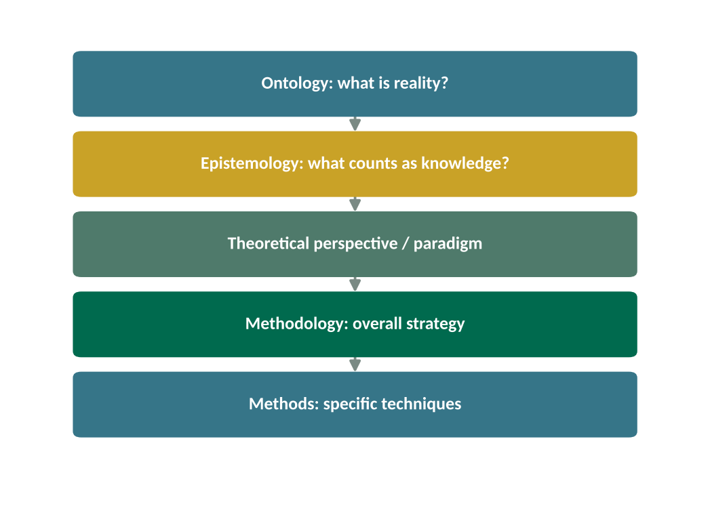</p>
<p><strong>Figure 1.</strong> <em>From philosophy to methods: the logic
of research design (after Crotty, 1998)</em></p>
<h2 id="major-philosophical-worldviews">1.3 Major philosophical
worldviews</h2>
<h3 id="i-positivism-and-post-positivism">(i) Positivism and
post-positivism</h3>
<p><strong>Positivism</strong> (Comte) holds that the social world can
be studied like the natural world through observation, measurement and
the testing of hypotheses to discover general laws.
<strong>Post-positivism</strong> (Popper, Phillips &amp; Burbules)
accepts that absolute truth cannot be proven; knowledge is conjectural
and claims are tested through falsification and probability. Research is
deterministic (causes probably determine effects), reductionist (reduce
ideas into small testable variables) and focused on empirical
observation and measurement.</p>
<h3 id="ii-interpretivism-and-constructivism">(ii) Interpretivism and
constructivism</h3>
<p><strong>Interpretivism</strong> (Weber's <em>verstehen</em>, Schutz,
Gadamer) and <strong>social constructivism</strong> (Berger &amp;
Luckmann) hold that reality is socially constructed; researchers seek to
understand the meanings people attach to their experiences. Research is
inductive, context-bound and relies on participants' views, using
open-ended questions, interviews and observation.</p>
<h3 id="iii-advocacy-participatory-transformative">(iii) Advocacy /
participatory (transformative)</h3>
<p>The <strong>transformative</strong> worldview (Mertens, 2010) holds
that research should be intertwined with politics and a political change
agenda to confront social oppression. It includes critical theory
(Habermas, Freire), feminist, critical race, queer, disability and
indigenous perspectives, and participatory action research. Research is
collaborative and aims at empowerment and emancipation.</p>
<h3 id="iv-pragmatism">(iv) Pragmatism</h3>
<p><strong>Pragmatism</strong> (Peirce, James, Dewey; in methodology,
Morgan, Tashakkori and Teddlie) focuses on the research problem and the
consequences of actions rather than on prior metaphysical positions.
"What works" to answer the question guides the choice of methods; it
underpins <strong>mixed methods</strong> research.</p>
<div class="table-wrap"><table>

<thead>
<tr class="header">
<th><strong>Feature</strong></th>
<th><strong>Post-positivism</strong></th>
<th><strong>Constructivism / interpretivism</strong></th>
<th><strong>Transformative / participatory</strong></th>
<th><strong>Pragmatism</strong></th>
</tr>
</thead>
<tbody>
<tr class="odd">
<td><strong>Ontology</strong></td>
<td>One reality, known imperfectly (critical realism)</td>
<td>Multiple, socially constructed realities</td>
<td>Realities shaped by power, social, political, gender, ethnic
values</td>
<td>Reality is what works; singular and multiple</td>
</tr>
<tr class="even">
<td><strong>Epistemology</strong></td>
<td>Objective; researcher independent</td>
<td>Subjective; co-constructed with participants</td>
<td>Collaborative; researcher works with communities</td>
<td>Practical; whatever answers the question</td>
</tr>
<tr class="odd">
<td><strong>Axiology</strong></td>
<td>Value-neutral, bias controlled</td>
<td>Values acknowledged; reflexivity</td>
<td>Research must advance social justice</td>
<td>Values shape choices about what to study</td>
</tr>
<tr class="even">
<td><strong>Logic</strong></td>
<td>Deductive, theory-testing</td>
<td>Inductive, theory-generating</td>
<td>Varies; action-oriented</td>
<td>Abductive; both</td>
</tr>
<tr class="odd">
<td><strong>Typical methodology</strong></td>
<td>Experiments, surveys, correlational studies</td>
<td>Ethnography, phenomenology, grounded theory, case study,
narrative</td>
<td>Participatory action research, critical ethnography</td>
<td>Mixed methods</td>
</tr>
<tr class="even">
<td><strong>Typical question in Bangladesh</strong></td>
<td>Does teacher training increase Grade 5 maths scores?</td>
<td>How do madrasah teachers experience the new curriculum?</td>
<td>How can Dalit or Rohingya communities shape their children's
schooling?</td>
<td>What explains dropout, and how do families and teachers describe
it?</td>
</tr>
</tbody>
</table></div>
<p><strong>Table 2.</strong> <em>Comparison of the four major
worldviews</em></p>
<p>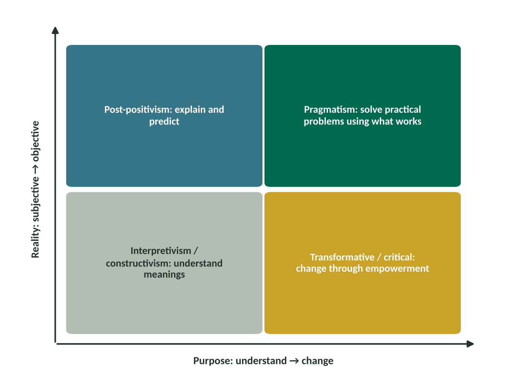</p>
<p><strong>Figure 2.</strong> <em>Paradigms mapped by view of reality
and purpose of research</em></p>
<h2 id="role-of-worldviews-in-educational-research">1.4 Role of
worldviews in educational research</h2>
<ul>
<li><p>They shape <strong>what questions</strong> are asked and how
problems are framed.</p></li>
<li><p>They guide the <strong>choice of design</strong> and
methods.</p></li>
<li><p>They determine <strong>criteria for quality</strong> (validity
and reliability versus trustworthiness).</p></li>
<li><p>They make researchers <strong>reflexive</strong> about their
position and assumptions.</p></li>
<li><p>They help readers evaluate whether the study's claims are
consistent with its philosophy.</p></li>
</ul>
<h2 id="applying-worldviews-for-selecting-designs">1.5 Applying
worldviews for selecting designs</h2>
<p>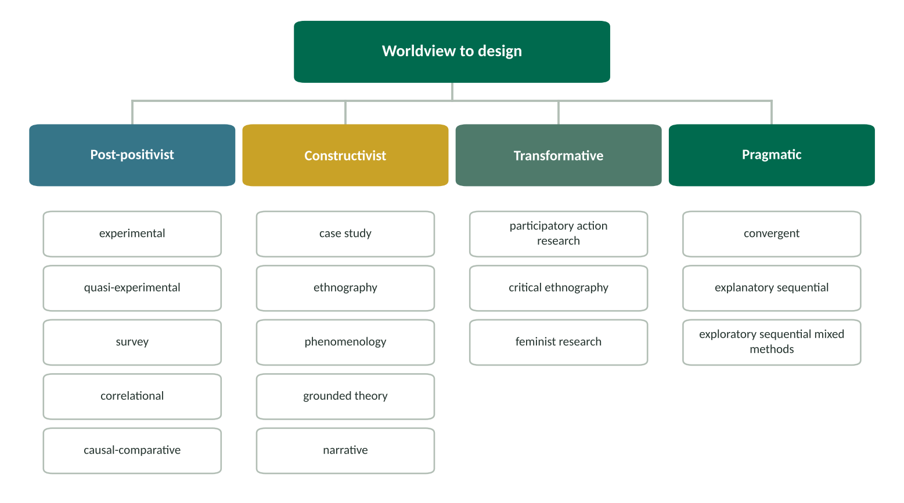</p>
<p><strong>Figure 3.</strong> <em>Linking worldviews to research
approaches and designs (after Creswell &amp; Creswell, 2018)</em></p>
<div class="box box-critical"><div class="box-label">Critical Perspective</div>
<p>The "paradigm wars" of the 1980s (quantitative versus qualitative)
have given way to more pluralist positions, but the incompatibility
thesis (that paradigms cannot be mixed) still has defenders (Guba &amp;
Lincoln). Many methodologists now prefer to see paradigms as
<strong>heuristic frames</strong> rather than rigid camps, and emphasise
coherence between question, philosophy and method.</p></div>
<div class="box box-exam"><div class="box-label">Exam Focus</div>
<p>Likely questions: "Explain ontology, epistemology and axiology with
examples." "Compare positivism, interpretivism, transformative and
pragmatic worldviews." "How does a researcher's worldview influence the
selection of research design?"</p></div>
<h1 id="unit-2-developing-theoretical-and-conceptual-framework-of-a-research">Unit
2: Developing Theoretical and Conceptual Framework of a Research</h1><div aria-label="Tools for Unit 2: Developing Theoretical and Conceptual Framework of a Research" class="unit-tools" role="group"><button aria-label="Listen to Unit 2: Developing Theoretical and Conceptual Framework of a Research" class="tts-btn" data-target="unit-2-developing-theoretical-and-conceptual-framework-of-a-research" data-tts="unit" type="button"><span aria-hidden="true">▶</span> Listen to this chapter</button><button aria-label="Listen to the summary of Unit 2: Developing Theoretical and Conceptual Framework of a Research" class="tts-btn" data-target="sum-unit-2-developing-theoretical-and-conceptual-framework-of-a-research" data-tts="summary" type="button"><span aria-hidden="true">▶</span> Listen to summary</button><button class="done-btn" data-unit="unit-2-developing-theoretical-and-conceptual-framework-of-a-research" type="button">Mark as studied</button></div><details class="unit-summary" id="sum-unit-2-developing-theoretical-and-conceptual-framework-of-a-research"><summary>Chapter summary</summary><div class="sum-body"><p>Malak, Sharma and Deppeler (2018) used Ajzen's (1991) Theory of Planned Behaviour (TPB) to examine predictors of Bangladeshi primary teachers' intention to teach students demonstrating inappropriate behaviour. TPB proposes that attitudes , subjective norms and perceived behavioural control predict intention , which predicts behaviour .</p><p><strong>This chapter covers:</strong> Meaning; Importance and uses; Steps in developing a conceptual framework; Examples from real-world research.</p><p><strong>Key terms:</strong></p><ul><li>Theory (Kerlinger, 1986): "A set of interrelated constructs (concepts), definitions, and propositions that present a systematic view of phenomena by specifying relations among variables, with the purpose of explaining and predicting the phenomena."</li><li>Theoretical framework: The structure that holds or supports a theory of a research study; it introduces and describes the existing theory (or theories) that explain why the research problem exists and guides the study (Grant &amp; Osanloo, 2014).</li><li>Conceptual framework (Miles &amp; Huberman, 1994): "Explains, either graphically or in narrative form, the main things to be studied: the key factors, constructs or variables, and the presumed relationships among them." It is the researcher's own synthesis, often drawing on…</li></ul><p><strong>Key points to remember:</strong></p><ul><li>In a thesis, the theoretical or conceptual framework usually appears at the end of the literature review chapter.</li></ul></div></details><details class="curriculum" open=""><summary><span class="cur-label">What the curriculum says</span><span class="cur-unit">Unit 2: Developing Theoretical and Conceptual Framework of a Research · 5 contact hours</span></summary><div class="cur-h">Learning outcomes</div><p class="cur-lead">At the end of this unit learners will be able to</p><ol type="a"><li>identify the theoretical and conceptual framework of a study</li><li>develop any theoretical and conceptual framework for their study</li></ol><div class="cur-h">Content</div><ul><li>Meaning of Theoretical and Conceptual framework</li><li>Importance and use of Theoretical and Conceptual framework</li><li>Examples from real world research</li></ul></details>
<h2 id="meaning">2.1 Meaning</h2>
<div class="box box-def"><div class="box-label">Definition</div>
<p><strong>Theory (Kerlinger, 1986):</strong> "A set of interrelated
constructs (concepts), definitions, and propositions that present a
systematic view of phenomena by specifying relations among variables,
with the purpose of explaining and predicting the phenomena."</p></div>
<div class="box box-def"><div class="box-label">Definition</div>
<p><strong>Theoretical framework:</strong> The structure that holds or
supports a theory of a research study; it introduces and describes the
existing theory (or theories) that explain why the research problem
exists and guides the study (Grant &amp; Osanloo, 2014). It is borrowed
from established literature.</p></div>
<div class="box box-def"><div class="box-label">Definition</div>
<p><strong>Conceptual framework (Miles &amp; Huberman, 1994):</strong>
"Explains, either graphically or in narrative form, the main things to
be studied: the key factors, constructs or variables, and the presumed
relationships among them." It is the researcher's own synthesis, often
drawing on several theories and empirical studies.</p></div>
<div class="table-wrap"><table>

<thead>
<tr class="header">
<th><strong>Aspect</strong></th>
<th><strong>Theoretical framework</strong></th>
<th><strong>Conceptual framework</strong></th>
</tr>
</thead>
<tbody>
<tr class="odd">
<td><strong>Source</strong></td>
<td>An established theory (e.g., Bandura's self-efficacy theory)</td>
<td>Researcher's synthesis of theories, literature and experience</td>
</tr>
<tr class="even">
<td><strong>Scope</strong></td>
<td>Broad, general</td>
<td>Specific to the study</td>
</tr>
<tr class="odd">
<td><strong>Purpose</strong></td>
<td>Explains phenomena; provides lens</td>
<td>Maps variables or concepts and their relationships for this
study</td>
</tr>
<tr class="even">
<td><strong>Typical use</strong></td>
<td>Deductive, quantitative studies (also qualitative as lens)</td>
<td>Both quantitative and qualitative studies</td>
</tr>
<tr class="odd">
<td><strong>Form</strong></td>
<td>Narrative description of theory</td>
<td>Diagram plus narrative</td>
</tr>
<tr class="even">
<td><strong>Analogy</strong></td>
<td>The blueprint of a house design style</td>
<td>The specific floor plan of this house</td>
</tr>
</tbody>
</table></div>
<p><strong>Table 3.</strong> <em>Theoretical versus conceptual
framework</em></p>
<h2 id="importance-and-uses">2.2 Importance and uses</h2>
<ul>
<li><p>Connects the study to existing knowledge and positions it in
scholarship.</p></li>
<li><p>Clarifies key concepts and variables; supports operational
definitions.</p></li>
<li><p>Guides formulation of research questions and hypotheses.</p></li>
<li><p>Informs the design, instruments and analysis.</p></li>
<li><p>Provides a lens for interpreting findings and explaining
results.</p></li>
<li><p>Helps generalisation (quantitative) or transferability
(qualitative).</p></li>
<li><p>In qualitative research, a framework can be developed or refined
inductively (grounded theory) rather than fixed in advance.</p></li>
</ul>
<h2 id="steps-in-developing-a-conceptual-framework">2.3 Steps in
developing a conceptual framework</h2>
<p>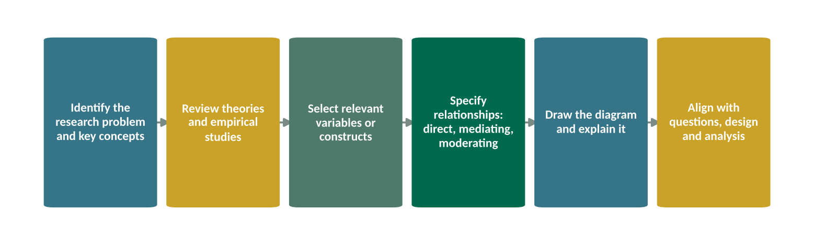</p>
<p><strong>Figure 4.</strong> <em>Developing a conceptual
framework</em></p>
<h3 id="types-of-variables">Types of variables</h3>
<div class="table-wrap"><table>

<thead>
<tr class="header">
<th><strong>Variable</strong></th>
<th><strong>Definition</strong></th>
<th><strong>Example</strong></th>
</tr>
</thead>
<tbody>
<tr class="odd">
<td><strong>Independent (predictor)</strong></td>
<td>Presumed cause, manipulated or measured</td>
<td>Type of teacher training</td>
</tr>
<tr class="even">
<td><strong>Dependent (outcome)</strong></td>
<td>Presumed effect</td>
<td>Students' mathematics achievement</td>
</tr>
<tr class="odd">
<td><strong>Mediating (intervening)</strong></td>
<td>Explains how or why the IV affects the DV</td>
<td>Teachers' classroom practice</td>
</tr>
<tr class="even">
<td><strong>Moderating</strong></td>
<td>Changes the strength or direction of the relationship</td>
<td>School location (urban or rural)</td>
</tr>
<tr class="odd">
<td><strong>Control</strong></td>
<td>Held constant or statistically controlled</td>
<td>Students' prior achievement</td>
</tr>
<tr class="even">
<td><strong>Extraneous / confounding</strong></td>
<td>Uncontrolled variable that may distort results</td>
<td>Private tutoring</td>
</tr>
</tbody>
</table></div>
<p><strong>Table 4.</strong> <em>Types of variables in a conceptual
framework</em></p>
<h2 id="examples-from-real-world-research">2.4 Examples from real-world
research</h2>
<h3 id="example-1-theory-of-planned-behaviour-quantitative">Example 1:
Theory of Planned Behaviour (quantitative)</h3>
<p>Malak, Sharma and Deppeler (2018) used Ajzen's (1991) <strong>Theory
of Planned Behaviour (TPB)</strong> to examine predictors of Bangladeshi
primary teachers' intention to teach students demonstrating
inappropriate behaviour. TPB proposes that <strong>attitudes</strong>,
<strong>subjective norms</strong> and <strong>perceived behavioural
control</strong> predict <strong>intention</strong>, which predicts
<strong>behaviour</strong>.</p>
<p>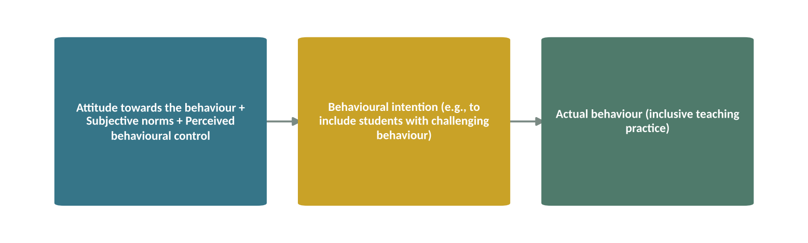</p>
<p><strong>Figure 5.</strong> <em>Theory of Planned Behaviour as a
theoretical framework (Ajzen, 1991)</em></p>
<h3 id="example-2-a-conceptual-framework-for-a-bangladesh-study">Example
2: A conceptual framework for a Bangladesh study</h3>
<p>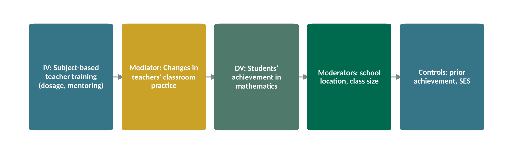</p>
<p><strong>Figure 6.</strong> <em>Illustrative conceptual framework:
teacher professional development and learning</em></p>
<h3 id="example-3-qualitative-theoretical-lens">Example 3: Qualitative
theoretical lens</h3>
<p>A phenomenological study of first-generation female university
students in Bangladesh might use <strong>Bourdieu's</strong> concepts of
cultural capital and habitus as a sensitising lens, while allowing
themes to emerge from interviews.</p>
<div class="box box-key"><div class="box-label">Key Point</div>
<p>In a thesis, the theoretical or conceptual framework usually appears
at the end of the literature review chapter. Examiners check whether the
framework is <strong>actually used</strong>: the variables in the
diagram should appear in the questions, the instruments and the
analysis.</p></div>
<div class="box box-exam"><div class="box-label">Exam Focus</div>
<p>Expect: "Differentiate theoretical and conceptual frameworks."
"Develop a conceptual framework for a study on dropout in secondary
schools in Bangladesh." "Explain mediating and moderating variables with
examples."</p></div>
<h1 id="unit-3-selecting-appropriate-research-design">Unit 3: Selecting
Appropriate Research Design</h1><div aria-label="Tools for Unit 3: Selecting Appropriate Research Design" class="unit-tools" role="group"><button aria-label="Listen to Unit 3: Selecting Appropriate Research Design" class="tts-btn" data-target="unit-3-selecting-appropriate-research-design" data-tts="unit" type="button"><span aria-hidden="true">▶</span> Listen to this chapter</button><button aria-label="Listen to the summary of Unit 3: Selecting Appropriate Research Design" class="tts-btn" data-target="sum-unit-3-selecting-appropriate-research-design" data-tts="summary" type="button"><span aria-hidden="true">▶</span> Listen to summary</button><button class="done-btn" data-unit="unit-3-selecting-appropriate-research-design" type="button">Mark as studied</button></div><details class="unit-summary" id="sum-unit-3-selecting-appropriate-research-design"><summary>Chapter summary</summary><div class="sum-body"><p>In design notation, R = random assignment, O = observation or measurement, X = treatment.</p><p><strong>This chapter covers:</strong> Recapitulating research designs; Identifying a real-world educational problem; Selecting an appropriate design with justification; Complexity in selecting a research design.</p><p><strong>Key terms:</strong></p><ul><li>Research design (Creswell &amp; Creswell, 2018): "Types of inquiry within qualitative, quantitative, and mixed methods approaches that provide specific direction for procedures in a research study." Kerlinger (1986) described it as "the plan and structure of investigation so conceived as…</li></ul></div></details><details class="curriculum" open=""><summary><span class="cur-label">What the curriculum says</span><span class="cur-unit">Unit 3: Selecting Appropriate Research Design · 5 contact hours</span></summary><div class="cur-h">Learning outcomes</div><p class="cur-lead">At the end of this unit learners will be able to</p><ol type="a"><li>identify a researchable problem in education</li><li>select appropriate research design for their study with justification</li></ol><div class="cur-h">Content</div><ul><li>Recapitulate research designs</li><li>Identify real world educational problem</li><li>Select appropriate research design with justification</li><li>Complexity in selecting research design</li></ul></details>
<h2 id="recapitulating-research-designs">3.1 Recapitulating research
designs</h2>
<div class="box box-def"><div class="box-label">Definition</div>
<p><strong>Research design (Creswell &amp; Creswell, 2018):</strong>
"Types of inquiry within qualitative, quantitative, and mixed methods
approaches that provide specific direction for procedures in a research
study." Kerlinger (1986) described it as "the plan and structure of
investigation so conceived as to obtain answers to research questions
and to control variance".</p></div>
<div class="table-wrap"><table>

<thead>
<tr class="header">
<th><strong>Approach</strong></th>
<th><strong>Design</strong></th>
<th><strong>Purpose</strong></th>
<th><strong>Example question</strong></th>
</tr>
</thead>
<tbody>
<tr class="odd">
<td><strong>Quantitative</strong></td>
<td>True experimental</td>
<td>Test causal effects with random assignment</td>
<td>Does peer tutoring improve reading fluency more than traditional
instruction?</td>
</tr>
<tr class="even">
<td><strong>Quantitative</strong></td>
<td>Quasi-experimental</td>
<td>Test effects without random assignment</td>
<td>Effect of a new science kit in intact classes</td>
</tr>
<tr class="odd">
<td><strong>Quantitative</strong></td>
<td>Single-subject</td>
<td>Effects on individuals with repeated measures</td>
<td>Effect of token economy on a child's on-task behaviour</td>
</tr>
<tr class="even">
<td><strong>Quantitative</strong></td>
<td>Survey (cross-sectional, longitudinal)</td>
<td>Describe trends, attitudes, opinions</td>
<td>Teachers' attitudes towards inclusive education</td>
</tr>
<tr class="odd">
<td><strong>Quantitative</strong></td>
<td>Correlational (explanatory, prediction)</td>
<td>Relationship and prediction among variables</td>
<td>Does SSC GPA predict first-year university GPA?</td>
</tr>
<tr class="even">
<td><strong>Quantitative</strong></td>
<td>Causal-comparative (ex post facto)</td>
<td>Compare existing groups to infer causes</td>
<td>Achievement of students who attended pre-primary versus those who
did not</td>
</tr>
<tr class="odd">
<td><strong>Qualitative</strong></td>
<td>Case study</td>
<td>In-depth study of a bounded system</td>
<td>How did one upazila implement SLIP?</td>
</tr>
<tr class="even">
<td><strong>Qualitative</strong></td>
<td>Ethnography</td>
<td>Culture-sharing group's patterns</td>
<td>Classroom culture in a Qawmi madrasah</td>
</tr>
<tr class="odd">
<td><strong>Qualitative</strong></td>
<td>Phenomenology</td>
<td>Essence of lived experience</td>
<td>Experiences of visually impaired university students</td>
</tr>
<tr class="even">
<td><strong>Qualitative</strong></td>
<td>Grounded theory</td>
<td>Generate theory from data</td>
<td>How do novice teachers develop classroom management?</td>
</tr>
<tr class="odd">
<td><strong>Qualitative</strong></td>
<td>Narrative</td>
<td>Individual stories</td>
<td>Life stories of women head teachers</td>
</tr>
<tr class="even">
<td><strong>Qualitative</strong></td>
<td>Historical</td>
<td>Reconstruct past events</td>
<td>Development of teacher education in East Bengal, 1947-1971</td>
</tr>
<tr class="odd">
<td><strong>Mixed</strong></td>
<td>Convergent, explanatory sequential, exploratory sequential,
embedded</td>
<td>Combine strengths of both</td>
<td>Extent and reasons for coaching dependence</td>
</tr>
<tr class="even">
<td><strong>Practical</strong></td>
<td>Action research</td>
<td>Solve a local problem through cycles</td>
<td>Improving Grade 7 students' English writing</td>
</tr>
</tbody>
</table></div>
<p><strong>Table 5.</strong> <em>Major research designs</em></p>
<h3 id="experimental-notation-campbell-stanley-1963">Experimental
notation (Campbell &amp; Stanley, 1963)</h3>
<p>In design notation, <strong>R</strong> = random assignment,
<strong>O</strong> = observation or measurement, <strong>X</strong> =
treatment.</p>
<div class="table-wrap"><table>

<thead>
<tr class="header">
<th><strong>Design</strong></th>
<th><strong>Notation</strong></th>
<th><strong>Comment</strong></th>
</tr>
</thead>
<tbody>
<tr class="odd">
<td><strong>One-group pretest-posttest (pre-experimental)</strong></td>
<td>O X O</td>
<td>Weak: no control group; history, maturation threats</td>
</tr>
<tr class="even">
<td><strong>Static group comparison</strong></td>
<td>X O / O</td>
<td>No pretest, no randomisation</td>
</tr>
<tr class="odd">
<td><strong>Pretest-posttest control group (true)</strong></td>
<td>R O X O / R O O</td>
<td>Strong internal validity</td>
</tr>
<tr class="even">
<td><strong>Posttest-only control group (true)</strong></td>
<td>R X O / R O</td>
<td>Avoids testing effect</td>
</tr>
<tr class="odd">
<td><strong>Solomon four-group</strong></td>
<td>R O X O / R O O / R X O / R O</td>
<td>Controls testing interaction</td>
</tr>
<tr class="even">
<td><strong>Nonequivalent control group (quasi)</strong></td>
<td>O X O / O O</td>
<td>Common in schools with intact classes</td>
</tr>
<tr class="odd">
<td><strong>Time series (quasi)</strong></td>
<td>O O O X O O O</td>
<td>Detects trend changes</td>
</tr>
</tbody>
</table></div>
<p><strong>Table 6.</strong> <em>Common experimental designs in
notation</em></p>
<h2 id="identifying-a-real-world-educational-problem">3.2 Identifying a
real-world educational problem</h2>
<p>A <strong>researchable problem</strong> is significant, feasible,
ethical, clearly defined, and answerable with data. Sources include
classroom experience, policy debates, theory, literature gaps and
replication. Criteria (FINER: Feasible, Interesting, Novel, Ethical,
Relevant) help screen problems.</p>
<div class="table-wrap"><table>

<thead>
<tr class="header">
<th><strong>Broad topic</strong></th>
<th><strong>Researchable problem</strong></th>
</tr>
</thead>
<tbody>
<tr class="odd">
<td><strong>Private tutoring</strong></td>
<td>What is the relationship between hours of private tutoring and SSC
mathematics achievement among students in Dhaka and rural Rangpur?</td>
</tr>
<tr class="even">
<td><strong>Inclusive education</strong></td>
<td>How do primary teachers in Sylhet describe their experiences of
including children with autism?</td>
</tr>
<tr class="odd">
<td><strong>Digital learning</strong></td>
<td>What factors explain college teachers' use of Google Classroom after
COVID-19?</td>
</tr>
<tr class="even">
<td><strong>Assessment reform</strong></td>
<td>How did secondary teachers interpret and implement continuous
assessment under the 2021 curriculum?</td>
</tr>
</tbody>
</table></div>
<p><strong>Table 7.</strong> <em>Converting topics to researchable
problems</em></p>
<h2 id="selecting-an-appropriate-design-with-justification">3.3
Selecting an appropriate design with justification</h2>
<p>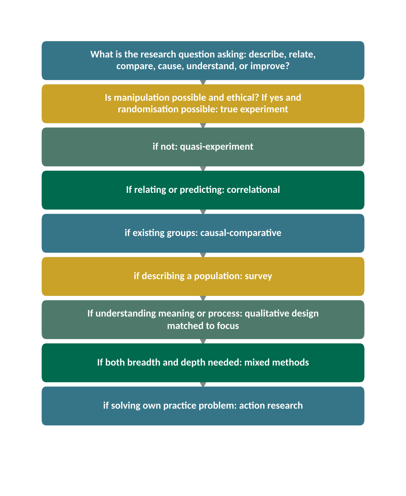</p>
<p><strong>Figure 7.</strong> <em>Decision path for selecting a research
design</em></p>
<p>A justification paragraph should state: (1) the research question and
its nature; (2) the worldview; (3) why the design fits better than
alternatives; (4) its known limitations and how they will be
addressed.</p>
<h2 id="complexity-in-selecting-a-research-design">3.4 Complexity in
selecting a research design</h2>
<ul>
<li><p>Multiple questions may require different designs (hence mixed
methods).</p></li>
<li><p>Ethical constraints (e.g., cannot withhold a beneficial
programme) push towards quasi-experiments or waitlist designs.</p></li>
<li><p>Practical constraints: access to schools, time, cost, language,
gatekeepers.</p></li>
<li><p>Researcher skills and supervisor expertise.</p></li>
<li><p>Political sensitivity of topics (e.g., question leaks,
corruption).</p></li>
<li><p>Ambiguity of design labels across textbooks.</p></li>
</ul>
<div class="box box-critical"><div class="box-label">Critical Perspective</div>
<p>Correlation does not prove causation; causal language ("effect",
"impact") should be used only with designs that support causal
inference. Many Bangladeshi theses overclaim causality from
cross-sectional surveys. Examiners appreciate cautious language: "is
associated with" rather than "causes".</p></div>
<div class="box box-exam"><div class="box-label">Exam Focus</div>
<p>Expect: "Discuss the major research designs with examples." "Explain
the notation of experimental designs and identify threats to validity in
O X O." "How would you select a design for studying dropout in rural
Bangladesh? Justify."</p></div>
<h1 id="unit-4-sample-and-sampling-designs">Unit 4: Sample and Sampling
Designs</h1><div aria-label="Tools for Unit 4: Sample and Sampling Designs" class="unit-tools" role="group"><button aria-label="Listen to Unit 4: Sample and Sampling Designs" class="tts-btn" data-target="unit-4-sample-and-sampling-designs" data-tts="unit" type="button"><span aria-hidden="true">▶</span> Listen to this chapter</button><button aria-label="Listen to the summary of Unit 4: Sample and Sampling Designs" class="tts-btn" data-target="sum-unit-4-sample-and-sampling-designs" data-tts="summary" type="button"><span aria-hidden="true">▶</span> Listen to summary</button><button class="done-btn" data-unit="unit-4-sample-and-sampling-designs" type="button">Mark as studied</button></div><details class="unit-summary" id="sum-unit-4-sample-and-sampling-designs"><summary>Chapter summary</summary><div class="sum-body"><p>For experiments and comparisons, sample size depends on effect size , significance level (α) , power (1 − β) and the test. With α = .05 and power = .80, an independent-samples t-test needs about 64 per group to detect a medium effect (d = 0.5) and about 26 per group for a large effect…</p><p><strong>This chapter covers:</strong> Recapitulating key concepts; Sample size estimation with statistical formulae; Sampling techniques; Justifying sampling and its complexities.</p><p><strong>Key points to remember:</strong></p><ul><li>Adjust for non-response (divide by expected response rate: 323 ÷ 0.85 ≈ 380 questionnaires) and for cluster sampling (multiply by the design effect, DEFF = 1 + (m − 1)ρ, where m is cluster size and ρ the intraclass correlation).</li></ul></div></details><details class="curriculum" open=""><summary><span class="cur-label">What the curriculum says</span><span class="cur-unit">Unit 4: Sample and Sampling Designs · 5 contact hours</span></summary><div class="cur-h">Learning outcomes</div><p class="cur-lead">At the end of this unit learners will be able to</p><ol type="a"><li>estimate appropriate sample size for their study</li><li>use appropriate sampling technique for selecting a sample</li></ol><div class="cur-h">Content</div><ul><li>Recapitulate the concept of sample and sampling</li><li>Sample size estimation with using statistical formula</li><li>Select appropriate sampling techniques (for quantitative and qualitative research) with</li></ul><div class="cur-sub">justification</div><ul><li>Complexity in selecting sampling techniques</li></ul></details>
<h2 id="recapitulating-key-concepts">4.1 Recapitulating key
concepts</h2>
<div class="table-wrap"><table>

<thead>
<tr class="header">
<th><strong>Term</strong></th>
<th><strong>Meaning</strong></th>
</tr>
</thead>
<tbody>
<tr class="odd">
<td><strong>Population (universe)</strong></td>
<td>The complete group about which conclusions are drawn</td>
</tr>
<tr class="even">
<td><strong>Target population</strong></td>
<td>Population to which results are intended to generalise</td>
</tr>
<tr class="odd">
<td><strong>Accessible population</strong></td>
<td>Part of the target population the researcher can actually reach</td>
</tr>
<tr class="even">
<td><strong>Sampling frame</strong></td>
<td>List of units from which the sample is drawn (e.g., EIIN list of
schools)</td>
</tr>
<tr class="odd">
<td><strong>Sample</strong></td>
<td>Subset selected for the study</td>
</tr>
<tr class="even">
<td><strong>Sampling unit</strong></td>
<td>Element or group selected (student, class, school)</td>
</tr>
<tr class="odd">
<td><strong>Parameter</strong></td>
<td>A characteristic of the population (μ, σ)</td>
</tr>
<tr class="even">
<td><strong>Statistic</strong></td>
<td>A characteristic of the sample (x̄, s)</td>
</tr>
<tr class="odd">
<td><strong>Sampling error</strong></td>
<td>Difference between a statistic and the parameter due to chance</td>
</tr>
<tr class="even">
<td><strong>Sampling bias</strong></td>
<td>Systematic error from a non-representative selection process</td>
</tr>
</tbody>
</table></div>
<p><strong>Table 8.</strong> <em>Basic sampling terms</em></p>
<h2 id="sample-size-estimation-with-statistical-formulae">4.2 Sample
size estimation with statistical formulae</h2>
<h3 id="cochrans-formula-for-proportions-large-population">Cochran's
formula for proportions (large population)</h3>
<div class="box box-note"><p>n₀ = Z² p q / e²</p>
<p>where Z = 1.96 for 95% confidence, p = estimated proportion (use 0.5
if unknown), q = 1 − p, e = margin of error</p></div>
<div class="box box-example"><div class="box-label">Worked Example</div>
<p>For 95% confidence, p = 0.5 and e = 0.05: n₀ = (1.96)² × 0.5 × 0.5 /
(0.05)² = 3.8416 × 0.25 / 0.0025 = 384.16, so <strong>385</strong>
respondents.</p></div>
<h3 id="finite-population-correction">Finite population correction</h3>
<div class="box box-note">n = n₀ / [1 + (n₀ − 1) / N]</div>
<div class="box box-example"><div class="box-label">Worked Example</div>
<p>If the population is N = 2,000 teachers: n = 384.16 / [1 + 383.16 /
2000] = 384.16 / 1.1916 = 322.4, so <strong>323</strong> teachers.
(Krejcie and Morgan's (1970) table gives 322 for N = 2,000.)</p></div>
<h3 id="yamanes-1967-simplified-formula">Yamane's (1967) simplified
formula</h3>
<div class="box box-note">n = N / (1 + N e²)</div>
<div class="box box-example"><div class="box-label">Worked Example</div>
<p>N = 2,000, e = 0.05: n = 2000 / (1 + 2000 × 0.0025) = 2000 / 6 =
333.3, so <strong>334</strong>.</p></div>
<h3 id="sample-size-for-estimating-a-mean">Sample size for estimating a
mean</h3>
<div class="box box-note">n = (Z σ / e)²</div>
<div class="box box-example"><div class="box-label">Worked Example</div>
<p>To estimate mean test score within ±2 marks when σ ≈ 10: n = (1.96 ×
10 / 2)² = (9.8)² = 96.04, so <strong>97</strong> students.</p></div>
<h3 id="power-analysis">Power analysis</h3>
<p>For experiments and comparisons, sample size depends on
<strong>effect size</strong>, <strong>significance level (α)</strong>,
<strong>power (1 − β)</strong> and the test. With α = .05 and power =
.80, an independent-samples t-test needs about <strong>64 per
group</strong> to detect a medium effect (d = 0.5) and about <strong>26
per group</strong> for a large effect (d = 0.8) (Cohen, 1988). G*Power
software calculates these.</p>
<div class="box box-key"><div class="box-label">Key Point</div>
<p>Adjust for <strong>non-response</strong> (divide by expected response
rate: 323 ÷ 0.85 ≈ 380 questionnaires) and for <strong>cluster
sampling</strong> (multiply by the design effect, DEFF = 1 + (m − 1)ρ,
where m is cluster size and ρ the intraclass correlation).</p></div>
<h2 id="sampling-techniques">4.3 Sampling techniques</h2>
<p>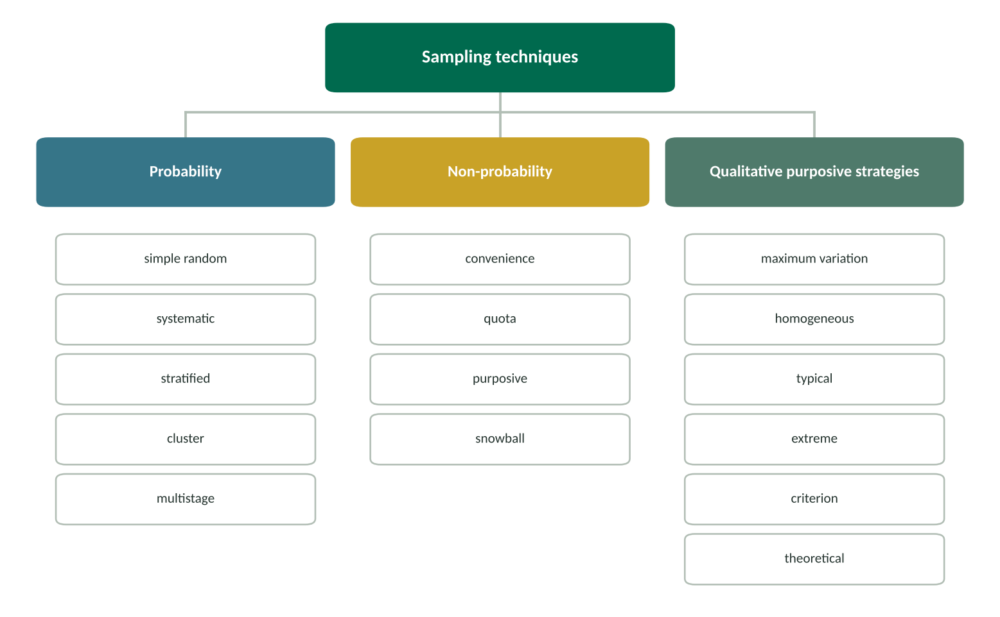</p>
<p><strong>Figure 8.</strong> <em>Classification of sampling
techniques</em></p>
<div class="table-wrap"><table>

<thead>
<tr class="header">
<th><strong>Technique</strong></th>
<th><strong>Procedure</strong></th>
<th><strong>Strength</strong></th>
<th><strong>Limitation</strong></th>
</tr>
</thead>
<tbody>
<tr class="odd">
<td><strong>Simple random</strong></td>
<td>Every unit has an equal chance (lottery, random number table,
software)</td>
<td>Unbiased; basis of inference</td>
<td>Needs full frame; may miss small subgroups</td>
</tr>
<tr class="even">
<td><strong>Systematic</strong></td>
<td>Every kth unit after random start (k = N/n)</td>
<td>Simple, spread across list</td>
<td>Bias if list has periodicity</td>
</tr>
<tr class="odd">
<td><strong>Stratified</strong></td>
<td>Divide into strata (e.g., gender, location); random sample within
each (proportionate or disproportionate)</td>
<td>Ensures representation; more precise</td>
<td>Needs stratum information</td>
</tr>
<tr class="even">
<td><strong>Cluster</strong></td>
<td>Randomly select groups (schools), study all units in them</td>
<td>Practical for scattered populations</td>
<td>Larger sampling error</td>
</tr>
<tr class="odd">
<td><strong>Multistage</strong></td>
<td>Successive stages (division → district → upazila → school →
students)</td>
<td>Practical for national surveys</td>
<td>Complex analysis (weights, design effect)</td>
</tr>
</tbody>
</table></div>
<p><strong>Table 9.</strong> <em>Probability sampling
techniques</em></p>
<div class="table-wrap"><table>

<thead>
<tr class="header">
<th><strong>Technique</strong></th>
<th><strong>Procedure</strong></th>
<th><strong>Use</strong></th>
</tr>
</thead>
<tbody>
<tr class="odd">
<td><strong>Convenience</strong></td>
<td>Easily available participants</td>
<td>Pilot studies; limited generalisation</td>
</tr>
<tr class="even">
<td><strong>Quota</strong></td>
<td>Fill quotas for subgroups non-randomly</td>
<td>Market-style surveys</td>
</tr>
<tr class="odd">
<td><strong>Purposive (judgemental)</strong></td>
<td>Select information-rich cases deliberately</td>
<td>Qualitative and expert studies</td>
</tr>
<tr class="even">
<td><strong>Snowball / chain referral</strong></td>
<td>Participants refer others</td>
<td>Hard-to-reach groups (e.g., dropout child labourers)</td>
</tr>
<tr class="odd">
<td><strong>Maximum variation</strong></td>
<td>Cases differing widely</td>
<td>Capture diverse perspectives</td>
</tr>
<tr class="even">
<td><strong>Homogeneous</strong></td>
<td>Similar cases</td>
<td>Focus groups</td>
</tr>
<tr class="odd">
<td><strong>Typical / extreme (deviant) case</strong></td>
<td>Average or unusual cases</td>
<td>Illustrate norm or learn from outliers</td>
</tr>
<tr class="even">
<td><strong>Criterion</strong></td>
<td>Cases meeting a criterion</td>
<td>All teachers with 10+ years' experience</td>
</tr>
<tr class="odd">
<td><strong>Theoretical</strong></td>
<td>Cases chosen to develop emerging theory</td>
<td>Grounded theory</td>
</tr>
</tbody>
</table></div>
<p><strong>Table 10.</strong> <em>Non-probability and qualitative
sampling techniques</em></p>
<h3 id="sample-size-in-qualitative-research">Sample size in qualitative
research</h3>
<p>Qualitative sample size is guided by <strong>saturation</strong> (no
new information or themes emerge), <strong>information power</strong>
(Malterud et al., 2016: narrower aims, dense specificity, established
theory, strong dialogue and focused analysis need fewer participants)
and design norms: phenomenology often 3 to 10 or more; grounded theory
20 to 30; case study 1 to 5 cases (Creswell &amp; Poth, 2018).</p>
<h2 id="justifying-sampling-and-its-complexities">4.4 Justifying
sampling and its complexities</h2>
<p>A justification should link the sampling technique to the research
question, design, population characteristics and generalisation claim.
Complexities include: no reliable sampling frame (e.g., unregistered
Qawmi madrasahs), access and gatekeepers, non-response, hidden
populations, ethical issues of selecting vulnerable groups, and
multistage designs requiring weighting.</p>
<div class="box box-example"><div class="box-label">Worked Example</div>
<p>Sampling plan for a national teacher survey: Stage 1, randomly select
4 of 8 divisions; Stage 2, randomly select 2 districts per division;
Stage 3, stratify secondary schools by management (government,
non-government) and location (urban, rural) and randomly select 6
schools per district; Stage 4, select all Bangla, English and
mathematics teachers in each school. Total ≈ 48 schools × 6 teachers ≈
288 teachers.</p></div>
<div class="box box-exam"><div class="box-label">Exam Focus</div>
<p>Expect: "Calculate the sample size for a population of 5,000 at 95%
confidence and 5% margin of error." "Compare stratified and cluster
sampling." "What is saturation in qualitative sampling?" "Explain
multistage sampling with a Bangladesh example."</p></div>
<h1 id="unit-5-constructing-research-tools">Unit 5: Constructing
Research Tools</h1><div aria-label="Tools for Unit 5: Constructing Research Tools" class="unit-tools" role="group"><button aria-label="Listen to Unit 5: Constructing Research Tools" class="tts-btn" data-target="unit-5-constructing-research-tools" data-tts="unit" type="button"><span aria-hidden="true">▶</span> Listen to this chapter</button><button aria-label="Listen to the summary of Unit 5: Constructing Research Tools" class="tts-btn" data-target="sum-unit-5-constructing-research-tools" data-tts="summary" type="button"><span aria-hidden="true">▶</span> Listen to summary</button><button class="done-btn" data-unit="unit-5-constructing-research-tools" type="button">Mark as studied</button></div><details class="unit-summary" id="sum-unit-5-constructing-research-tools"><summary>Chapter summary</summary><div class="sum-body"><p>Nature: a written set of questions that respondents answer themselves (self-administered), on paper or online. Types: structured (closed), unstructured (open), semi-structured (mixed); by mode: mailed, group-administered, online (Google Forms, KoBoToolbox), telephone-assisted.</p><p><strong>This chapter covers:</strong> Questionnaire; Interview; Observation; Scales; Psychological tests; Focus Group Discussion (FGD); Sociometry; Validity, reliability and usefulness of tools.</p><p><strong>Key terms:</strong></p><ul><li>Validity (AERA, APA &amp; NCME, 2014): "The degree to which evidence and theory support the interpretations of test scores for proposed uses of tests." Validity is a property of interpretations, not of the instrument itself.</li><li>Reliability: The consistency of scores across occasions, forms, items or raters.</li></ul><p><strong>Key points to remember:</strong></p><ul><li>Common rules of thumb for Cronbach's alpha: ≥ .90 excellent; .80 to .89 good; .70 to .79 acceptable; .60 to .69 questionable; &lt; .60 poor (George &amp; Mallery, 2003).</li></ul></div></details><details class="curriculum" open=""><summary><span class="cur-label">What the curriculum says</span><span class="cur-unit">Unit 5: Constructing Research Tools · 5 contact hours</span></summary><div class="cur-h">Learning outcomes</div><p class="cur-lead">At the end of this unit learners will be able to</p><ol type="a"><li>select appropriate data collection tool/s for quantitative data</li><li>select appropriate data collection tool/s for qualitative data</li></ol><div class="cur-h">Content</div><ul><li>Questionnaire: Nature, types, purpose, construction, scopes and limitations</li><li>Interview: Nature, types, purpose, construction, scopes and limitations</li><li>Observation: Nature, types, purpose, construction, scopes and limitations</li><li>Scales: Nature, types, purpose, construction, scopes and limitations<ul><li>Likert Scales</li><li>Thurston Scales</li></ul></li><li>Psychological tests: Nature, types, purpose, construction, scopes and limitations</li><li>Focus Group Discussion: Nature, purpose, construction, scopes and limitations, conduction</li><li>Sociometry: Nature, purpose, construction, scopes and limitations</li><li>Validity, reliability and usefulness of tools</li></ul></details>
<h2 id="questionnaire">5.1 Questionnaire</h2>
<p><strong>Nature:</strong> a written set of questions that respondents
answer themselves (self-administered), on paper or online.
<strong>Types:</strong> structured (closed), unstructured (open),
semi-structured (mixed); by mode: mailed, group-administered, online
(Google Forms, KoBoToolbox), telephone-assisted.</p>
<div class="table-wrap"><table>

<thead>
<tr class="header">
<th><strong>Item type</strong></th>
<th><strong>Example</strong></th>
</tr>
</thead>
<tbody>
<tr class="odd">
<td><strong>Dichotomous</strong></td>
<td>Do you use multimedia in class? Yes / No</td>
</tr>
<tr class="even">
<td><strong>Multiple choice</strong></td>
<td>Highest qualification: B.Ed / M.Ed / Other</td>
</tr>
<tr class="odd">
<td><strong>Rating scale (Likert)</strong></td>
<td>"Inclusive education benefits all learners": SD, D, N, A, SA</td>
</tr>
<tr class="even">
<td><strong>Rank order</strong></td>
<td>Rank these five training needs from 1 to 5</td>
</tr>
<tr class="odd">
<td><strong>Checklist</strong></td>
<td>Tick all ICT tools you use</td>
</tr>
<tr class="even">
<td><strong>Semantic differential</strong></td>
<td>Teaching is: boring 1 2 3 4 5 6 7 interesting</td>
</tr>
<tr class="odd">
<td><strong>Open-ended</strong></td>
<td>What challenges do you face in continuous assessment?</td>
</tr>
</tbody>
</table></div>
<p><strong>Table 11.</strong> <em>Types of questionnaire items</em></p>
<p><strong>Construction steps:</strong> (1) define objectives and
variables; (2) review existing instruments; (3) draft items aligned to
each variable (item blueprint); (4) decide format, order and layout
(general to specific; sensitive items later); (5) write clear
instructions; (6) expert review for content validity; (7) translate and
back-translate (Bangla/English); (8) cognitive interview and pilot test;
(9) item analysis and reliability; (10) finalise.</p>
<p><strong>Item-writing rules:</strong> avoid double-barrelled questions
("Is the training useful and enjoyable?"), leading or loaded words,
double negatives, jargon, ambiguous time frames and assumptions; keep
items short; provide exhaustive and mutually exclusive options.</p>
<p><strong>Scope and limitations:</strong> economical, wide reach,
anonymity and standardisation; but low response rates, misunderstanding,
literacy demands, social desirability bias and no chance to probe.</p>
<h2 id="interview">5.2 Interview</h2>
<p><strong>Nature:</strong> a purposeful conversation in which the
researcher asks questions and records answers. <strong>Types:</strong>
structured (fixed questions, like an oral questionnaire),
semi-structured (guide with flexible probes), unstructured (in-depth,
conversational); individual or group; face-to-face, telephone or
online.</p>
<p><strong>Construction:</strong> develop an <strong>interview
protocol</strong> with introduction and consent script, warm-up
questions, main questions linked to research questions, probes ("Can you
give an example?"), closing question ("Is there anything else?"). Pilot
it.</p>
<p><strong>Conducting:</strong> build rapport, listen actively, avoid
leading, use silence, take notes, audio-record with consent, transcribe
verbatim.</p>
<p><strong>Scope and limitations:</strong> depth, clarification,
non-verbal cues, suitable for low-literacy participants; but
time-consuming, costly, interviewer effects, smaller samples, and
analysis is labour-intensive.</p>
<h2 id="observation">5.3 Observation</h2>
<p><strong>Nature:</strong> systematic watching and recording of
behaviour in natural or controlled settings. <strong>Types:</strong>
participant versus non-participant; structured (with schedule/checklist)
versus unstructured (field notes); overt versus covert; natural versus
contrived.</p>
<div class="table-wrap"><table>

<thead>
<tr class="header">
<th><strong>Role</strong></th>
<th><strong>Description</strong></th>
</tr>
</thead>
<tbody>
<tr class="odd">
<td><strong>Complete participant</strong></td>
<td>Researcher is a full member; identity concealed (ethical
concerns)</td>
</tr>
<tr class="even">
<td><strong>Participant as observer</strong></td>
<td>Researcher participates; role known</td>
</tr>
<tr class="odd">
<td><strong>Observer as participant</strong></td>
<td>Limited participation; mainly observing</td>
</tr>
<tr class="even">
<td><strong>Complete observer</strong></td>
<td>No participation; e.g., video or one-way mirror</td>
</tr>
</tbody>
</table></div>
<p><strong>Table 12.</strong> <em>Observer roles (Gold, 1958)</em></p>
<p><strong>Construction:</strong> define behaviours operationally;
choose recording method (event recording, interval/time sampling,
duration, rating scales, anecdotal records); prepare a schedule (e.g.,
Flanders Interaction Analysis Categories for classroom talk, Stallings
snapshot for time-on-task); train observers; establish inter-observer
agreement.</p>
<p><strong>Scope and limitations:</strong> captures actual behaviour
rather than reports; but observer effect (Hawthorne/reactivity),
observer bias, time cost, cannot access thoughts.</p>
<h2 id="scales">5.4 Scales</h2>
<h3 id="likert-scale">Likert scale</h3>
<p>Developed by Rensis Likert (1932), a <strong>summated rating
scale</strong> in which respondents indicate agreement with a series of
statements, typically on 5 points (Strongly disagree to Strongly agree).
Scores are summed across items, with <strong>negatively worded items
reverse-scored</strong>.</p>
<div class="table-wrap"><table style="width:100%;">

<thead>
<tr class="header">
<th><strong>Statement</strong></th>
<th><strong>SD (1)</strong></th>
<th><strong>D (2)</strong></th>
<th><strong>N (3)</strong></th>
<th><strong>A (4)</strong></th>
<th><strong>SA (5)</strong></th>
</tr>
</thead>
<tbody>
<tr class="odd">
<td><strong>Students with disabilities should learn in regular
classrooms</strong></td>
<td></td>
<td></td>
<td></td>
<td></td>
<td></td>
</tr>
<tr class="even">
<td><strong>Inclusion reduces the quality of teaching for other students
(reverse-scored)</strong></td>
<td></td>
<td></td>
<td></td>
<td></td>
<td></td>
</tr>
<tr class="odd">
<td><strong>I feel confident adapting lessons for diverse
learners</strong></td>
<td></td>
<td></td>
<td></td>
<td></td>
<td></td>
</tr>
</tbody>
</table></div>
<p><strong>Table 13.</strong> <em>Example Likert items: attitudes
towards inclusive education</em></p>
<p>Construction: generate a large pool of positive and negative
statements; expert review; pilot; item analysis (item-total
correlations, discrimination between high and low scorers); retain items
with good discrimination; compute Cronbach's alpha.</p>
<h3 id="thurstone-scale">Thurstone scale</h3>
<p>Developed by L. L. Thurstone (Thurstone &amp; Chave, 1929), the
<strong>method of equal-appearing intervals</strong>: (1) write many
statements (often 100+) about the attitude object; (2) a panel of judges
sorts each statement into 11 piles from least to most favourable; (3)
compute each statement's <strong>scale value</strong> (median of judges'
ratings) and spread (Q, interquartile range); (4) select about 20
statements with low Q spread across the scale range; (5) respondents
tick statements they agree with; their score is the mean or median scale
value of endorsed items.</p>
<div class="table-wrap"><table>

<thead>
<tr class="header">
<th><strong>Feature</strong></th>
<th><strong>Likert</strong></th>
<th><strong>Thurstone</strong></th>
</tr>
</thead>
<tbody>
<tr class="odd">
<td><strong>Construction</strong></td>
<td>Simpler; no judges</td>
<td>Laborious; requires judges</td>
</tr>
<tr class="even">
<td><strong>Response</strong></td>
<td>Degree of agreement with each item</td>
<td>Agree / disagree with items</td>
</tr>
<tr class="odd">
<td><strong>Scoring</strong></td>
<td>Sum of item scores</td>
<td>Mean or median of scale values of endorsed items</td>
</tr>
<tr class="even">
<td><strong>Assumption</strong></td>
<td>Ordinal; summed scores treated as interval</td>
<td>Equal-appearing intervals</td>
</tr>
<tr class="odd">
<td><strong>Reliability</strong></td>
<td>Usually high with fewer items</td>
<td>Comparable</td>
</tr>
<tr class="even">
<td><strong>Use today</strong></td>
<td>Very common</td>
<td>Rare</td>
</tr>
</tbody>
</table></div>
<p><strong>Table 14.</strong> <em>Likert and Thurstone scales
compared</em></p>
<p>Other scales: <strong>Guttman</strong> (cumulative) scaling,
<strong>semantic differential</strong> (Osgood: evaluation, potency,
activity), <strong>Bogardus social distance scale</strong>.</p>
<h2 id="psychological-tests">5.5 Psychological tests</h2>
<p><strong>Nature:</strong> standardised instruments that measure
psychological constructs (intelligence, aptitude, achievement,
personality, interests, attitudes) by sampling behaviour under
controlled conditions. <strong>Types:</strong> achievement versus
aptitude; speed versus power; individual versus group; verbal versus
non-verbal; norm-referenced versus criterion-referenced; objective
versus projective (Rorschach, TAT).</p>
<p><strong>Construction:</strong> define construct and purpose; prepare
a test blueprint (table of specifications); write items; expert review;
try-out; item analysis (difficulty index p, discrimination index D);
assemble final test; establish reliability, validity and norms; prepare
manual.</p>
<p><strong>Scope and limitations:</strong> objective and comparable
data; but cultural bias, test anxiety, misuse by untrained users, and
ethical issues of labelling.</p>
<h2 id="focus-group-discussion-fgd">5.6 Focus Group Discussion
(FGD)</h2>
<p><strong>Nature:</strong> a moderated group discussion (usually 6 to
10 participants) on a focused topic, using group interaction to generate
data (Krueger &amp; Casey, 2015).</p>
<p><strong>Purpose:</strong> explore perceptions, norms, language and
reasons; generate items for questionnaires; interpret survey results;
evaluate programmes.</p>
<p><strong>Construction and conduct:</strong> define purpose; select
homogeneous groups (e.g., separate groups for mothers and fathers;
teachers and SMC members); prepare a question route (opening,
introductory, transition, key, ending questions); recruit; arrange a
neutral venue; moderator facilitates, note-taker records; obtain consent
and confidentiality agreement; audio-record; debrief immediately;
analyse transcripts across groups.</p>
<p><strong>Scope and limitations:</strong> efficient, rich interaction,
useful with low-literacy groups; but dominant voices, conformity,
confidentiality limits, difficult analysis, not suitable for sensitive
personal topics.</p>
<h2 id="sociometry">5.7 Sociometry</h2>
<p><strong>Nature:</strong> a technique developed by <strong>Jacob L.
Moreno</strong> (1934) to measure social relationships, attraction and
rejection within a group. Members nominate peers according to a
criterion ("Whom would you most like to work with on a project?").</p>
<p><strong>Construction:</strong> state a meaningful criterion; ask for
1 to 3 choices (positive and possibly negative); tabulate choices in a
<strong>sociomatrix</strong>; draw a <strong>sociogram</strong> showing
stars (highly chosen), isolates (unchosen), mutual pairs, cliques and
rejectees.</p>
<p>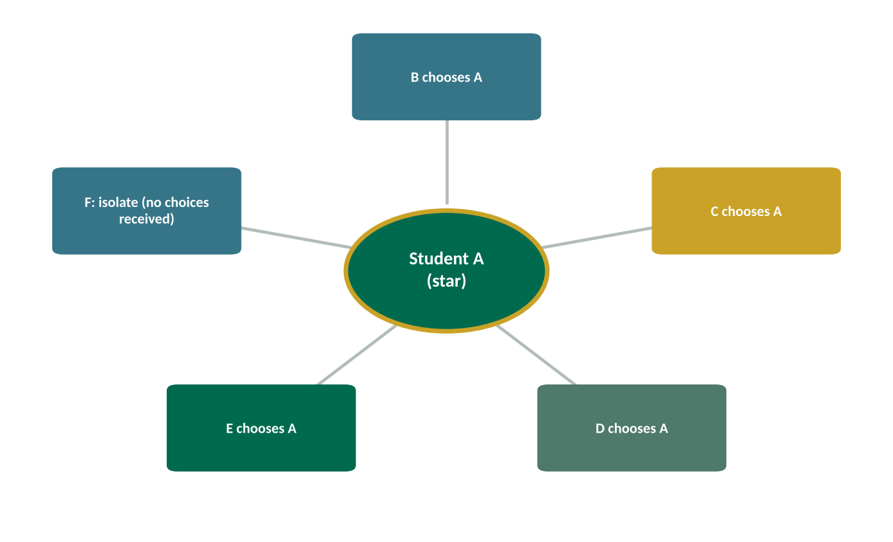</p>
<p><strong>Figure 9.</strong> <em>A simplified sociogram (lines
represent nominations): Student A is a "star"</em></p>
<p><strong>Scope and limitations:</strong> identifies isolated or
rejected children for support, informs group work and inclusion; but
ethical sensitivity (negative nominations), changes over time, does not
explain <em>why</em>.</p>
<h2 id="validity-reliability-and-usefulness-of-tools">5.8 Validity,
reliability and usefulness of tools</h2>
<h3 id="validity-of-instruments">Validity of instruments</h3>
<div class="box box-def"><div class="box-label">Definition</div>
<p><strong>Validity (AERA, APA &amp; NCME, 2014):</strong> "The degree
to which evidence and theory support the interpretations of test scores
for proposed uses of tests." Validity is a property of interpretations,
not of the instrument itself.</p></div>
<div class="table-wrap"><table>

<thead>
<tr class="header">
<th><strong>Type</strong></th>
<th><strong>Meaning</strong></th>
<th><strong>How established</strong></th>
</tr>
</thead>
<tbody>
<tr class="odd">
<td><strong>Content validity</strong></td>
<td>Items adequately represent the domain</td>
<td>Table of specifications; expert judgement; Content Validity Index
(CVI; Lawshe's CVR)</td>
</tr>
<tr class="even">
<td><strong>Face validity</strong></td>
<td>Appears to measure what it should</td>
<td>Informal review (weakest form)</td>
</tr>
<tr class="odd">
<td><strong>Criterion validity: concurrent</strong></td>
<td>Correlates with an established measure at the same time</td>
<td>Correlation with existing test</td>
</tr>
<tr class="even">
<td><strong>Criterion validity: predictive</strong></td>
<td>Predicts a future criterion</td>
<td>SSC scores predicting HSC results</td>
</tr>
<tr class="odd">
<td><strong>Construct validity</strong></td>
<td>Measures the theoretical construct</td>
<td>Factor analysis (EFA/CFA), convergent and discriminant validity,
known-groups</td>
</tr>
</tbody>
</table></div>
<p><strong>Table 15.</strong> <em>Types of validity evidence</em></p>
<h3 id="reliability-of-instruments">Reliability of instruments</h3>
<div class="box box-def"><div class="box-label">Definition</div>
<p><strong>Reliability:</strong> The consistency of scores across
occasions, forms, items or raters. Classical test theory: Observed score
= True score + Error (X = T + E); reliability = variance of T / variance
of X.</p></div>
<div class="table-wrap"><table>

<thead>
<tr class="header">
<th><strong>Method</strong></th>
<th><strong>Procedure</strong></th>
<th><strong>Coefficient</strong></th>
</tr>
</thead>
<tbody>
<tr class="odd">
<td><strong>Test-retest (stability)</strong></td>
<td>Same test twice after an interval</td>
<td>Pearson r</td>
</tr>
<tr class="even">
<td><strong>Parallel / alternate forms (equivalence)</strong></td>
<td>Two equivalent forms</td>
<td>Pearson r</td>
</tr>
<tr class="odd">
<td><strong>Split-half</strong></td>
<td>Split into halves (odd-even); correct with Spearman-Brown</td>
<td>r(full) = 2r(half) / (1 + r(half))</td>
</tr>
<tr class="even">
<td><strong>Internal consistency</strong></td>
<td>Inter-item consistency</td>
<td>Cronbach's alpha; KR-20 (dichotomous items)</td>
</tr>
<tr class="odd">
<td><strong>Inter-rater</strong></td>
<td>Agreement between raters</td>
<td>Percentage agreement; Cohen's kappa; ICC</td>
</tr>
</tbody>
</table></div>
<p><strong>Table 16.</strong> <em>Methods of estimating
reliability</em></p>
<div class="box box-note"><p>Cronbach's α = [k / (k − 1)] × [1 − (Σ s²ᵢ / s²ₜ)]</p>
<p>where k = number of items, s²ᵢ = variance of each item, s²ₜ =
variance of total scores</p></div>
<div class="box box-example"><div class="box-label">Worked Example</div>
<p>If a split-half correlation is 0.70, the Spearman-Brown corrected
reliability is 2(0.70) / (1 + 0.70) = 1.40 / 1.70 =
<strong>0.82</strong>.</p></div>
<div class="box box-key"><div class="box-label">Key Point</div>
<p>Common rules of thumb for Cronbach's alpha: ≥ .90 excellent; .80 to
.89 good; .70 to .79 acceptable; .60 to .69 questionable; &lt; .60 poor
(George &amp; Mallery, 2003). Very high alpha (&gt; .95) may indicate
redundant items. <strong>Reliability is necessary but not sufficient for
validity.</strong></p></div>
<p>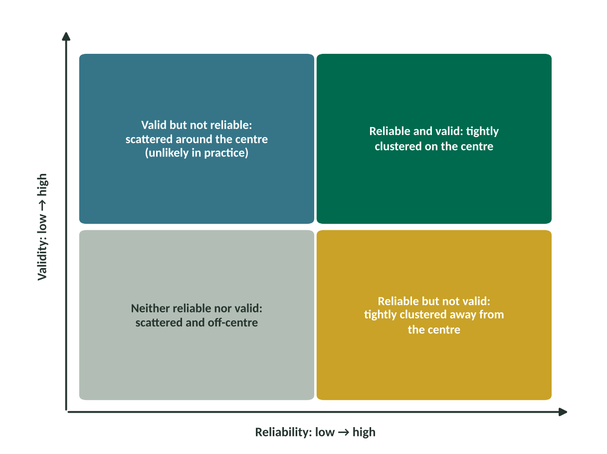</p>
<p><strong>Figure 10.</strong> <em>Reliability and validity illustrated
with a target</em></p>
<p><strong>Usefulness (practicality):</strong> ease of administration,
time, cost, scoring, interpretability, acceptability to respondents.</p>
<div class="box box-exam"><div class="box-label">Exam Focus</div>
<p>Expect: "Explain the steps of constructing a questionnaire." "Compare
Likert and Thurstone scales." "What is sociometry? Construct a sociogram
from given data." "Discuss methods of establishing reliability and
validity of research tools." "What is an FGD? How is it
conducted?"</p></div>
<h1 id="unit-6-validity-and-reliability-of-research-outcomes">Unit 6:
Validity and Reliability of Research Outcomes</h1><div aria-label="Tools for Unit 6: Validity and Reliability of Research Outcomes" class="unit-tools" role="group"><button aria-label="Listen to Unit 6: Validity and Reliability of Research Outcomes" class="tts-btn" data-target="unit-6-validity-and-reliability-of-research-outcomes" data-tts="unit" type="button"><span aria-hidden="true">▶</span> Listen to this chapter</button><button aria-label="Listen to the summary of Unit 6: Validity and Reliability of Research Outcomes" class="tts-btn" data-target="sum-unit-6-validity-and-reliability-of-research-outcomes" data-tts="summary" type="button"><span aria-hidden="true">▶</span> Listen to summary</button><button class="done-btn" data-unit="unit-6-validity-and-reliability-of-research-outcomes" type="button">Mark as studied</button></div><details class="unit-summary" id="sum-unit-6-validity-and-reliability-of-research-outcomes"><summary>Chapter summary</summary><div class="sum-body"><p>While Unit 5 dealt with the validity of instruments , Unit 6 deals with the validity of inferences from the whole study . Shadish, Cook and Campbell (2002) identify four types:</p><p><strong>This chapter covers:</strong> Validity issues in research design; Causal relationships; Internal validity threats in quantitative research; External validity; Quality in qualitative research: trustworthiness; Validity in mixed methods research.</p></div></details><details class="curriculum" open=""><summary><span class="cur-label">What the curriculum says</span><span class="cur-unit">Unit 6: Validity and Reliability of Research Outcomes · 5 contact hours</span></summary><div class="cur-h">Learning outcomes</div><p class="cur-lead">At the end of this unit learners will be able to</p><ol type="a"><li>measure validity and reliability of quantitative data</li><li>measure validity and reliability of qualitative data</li></ol><div class="cur-h">Content</div><ul><li>Validity issues in the research design</li><li>Causal relationships</li><li>Internal and External validity for quantitative, qualitative and mixed research</li></ul></details>
<h2 id="validity-issues-in-research-design">6.1 Validity issues in
research design</h2>
<p>While Unit 5 dealt with the validity of <strong>instruments</strong>,
Unit 6 deals with the validity of <strong>inferences from the whole
study</strong>. Shadish, Cook and Campbell (2002) identify four
types:</p>
<div class="table-wrap"><table>

<thead>
<tr class="header">
<th><strong>Type</strong></th>
<th><strong>Question</strong></th>
</tr>
</thead>
<tbody>
<tr class="odd">
<td><strong>Statistical conclusion validity</strong></td>
<td>Is there a relationship between the variables, and how strong is it?
(power, assumptions, error rates)</td>
</tr>
<tr class="even">
<td><strong>Internal validity</strong></td>
<td>Is the relationship causal: did the treatment cause the change?</td>
</tr>
<tr class="odd">
<td><strong>Construct validity</strong></td>
<td>Do the operations represent the intended constructs (of treatment,
outcome, persons, settings)?</td>
</tr>
<tr class="even">
<td><strong>External validity</strong></td>
<td>Do the results generalise across persons, settings, treatments and
times?</td>
</tr>
</tbody>
</table></div>
<p><strong>Table 17.</strong> <em>Four types of validity (Shadish, Cook
&amp; Campbell, 2002)</em></p>
<h2 id="causal-relationships">6.2 Causal relationships</h2>
<p>According to John Stuart Mill's logic as adopted by Shadish et al.
(2002), a causal relationship requires: (1) the cause
<strong>precedes</strong> the effect (temporal precedence); (2) the
cause and effect <strong>covary</strong>; and (3) <strong>alternative
explanations</strong> are ruled out. Experiments achieve this by
manipulating the cause, observing the effect, and using control groups
and randomisation to rule out alternatives.</p>
<h2 id="internal-validity-threats-in-quantitative-research">6.3 Internal
validity threats in quantitative research</h2>
<p>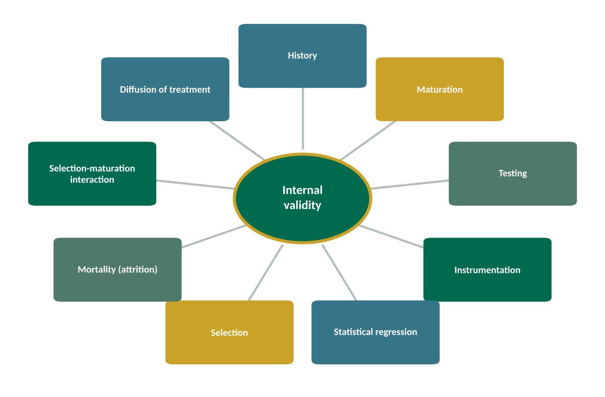</p>
<p><strong>Figure 11.</strong> <em>Threats to internal validity
(Campbell &amp; Stanley, 1963; Shadish et al., 2002)</em></p>
<div class="table-wrap"><table>

<thead>
<tr class="header">
<th><strong>Threat</strong></th>
<th><strong>Meaning</strong></th>
<th><strong>Example</strong></th>
<th><strong>Control</strong></th>
</tr>
</thead>
<tbody>
<tr class="odd">
<td><strong>History</strong></td>
<td>External events during the study</td>
<td>A national exam schedule change during an intervention</td>
<td>Control group; short duration</td>
</tr>
<tr class="even">
<td><strong>Maturation</strong></td>
<td>Natural changes over time</td>
<td>Children's reading improves with age</td>
<td>Control group</td>
</tr>
<tr class="odd">
<td><strong>Testing</strong></td>
<td>Effect of pretest on posttest</td>
<td>Students remember pretest items</td>
<td>Posttest-only or Solomon design</td>
</tr>
<tr class="even">
<td><strong>Instrumentation</strong></td>
<td>Changes in instruments or raters</td>
<td>Different observers at pre and post</td>
<td>Standardise and train raters</td>
</tr>
<tr class="odd">
<td><strong>Statistical regression</strong></td>
<td>Extreme scorers move towards the mean</td>
<td>Selecting the lowest scorers for remedial teaching</td>
<td>Random assignment; use reliable measures</td>
</tr>
<tr class="even">
<td><strong>Selection</strong></td>
<td>Groups differ initially</td>
<td>Better students in the treatment class</td>
<td>Random assignment; matching; ANCOVA</td>
</tr>
<tr class="odd">
<td><strong>Mortality / attrition</strong></td>
<td>Differential dropout</td>
<td>Weak students leave the treatment group</td>
<td>Track attrition; intention-to-treat</td>
</tr>
<tr class="even">
<td><strong>Diffusion / contamination</strong></td>
<td>Control group receives treatment ideas</td>
<td>Teachers share materials</td>
<td>Separate sites</td>
</tr>
<tr class="odd">
<td><strong>Compensatory rivalry (John Henry effect)</strong></td>
<td>Control group works harder</td>
<td>Control teachers compete</td>
<td>Blind conditions</td>
</tr>
<tr class="even">
<td><strong>Resentful demoralisation</strong></td>
<td>Control group loses motivation</td>
<td>Control students feel neglected</td>
<td>Waitlist design</td>
</tr>
<tr class="odd">
<td><strong>Experimenter effect</strong></td>
<td>Researcher's expectations influence results</td>
<td>Rosenthal (Pygmalion) effect</td>
<td>Blind assessment</td>
</tr>
</tbody>
</table></div>
<p><strong>Table 18.</strong> <em>Threats to internal validity with
examples and controls</em></p>
<h2 id="external-validity">6.4 External validity</h2>
<p>Threats include: <strong>interaction of selection and
treatment</strong> (results apply only to the type of participants
studied), <strong>interaction of setting and treatment</strong> (urban
versus rural schools), <strong>interaction of history and
treatment</strong> (effects during COVID-19 may not hold later),
<strong>reactive arrangements / Hawthorne effect</strong>, and
<strong>multiple-treatment interference</strong>. External validity is
supported by random sampling, diverse samples, replication and clear
description of context.</p>
<h2 id="quality-in-qualitative-research-trustworthiness">6.5 Quality in
qualitative research: trustworthiness</h2>
<p>Lincoln and Guba (1985) proposed parallel criteria to replace
conventional validity and reliability:</p>
<div class="table-wrap"><table>

<thead>
<tr class="header">
<th><strong>Criterion</strong></th>
<th><strong>Parallel to</strong></th>
<th><strong>Strategies</strong></th>
</tr>
</thead>
<tbody>
<tr class="odd">
<td><strong>Credibility</strong></td>
<td>Internal validity</td>
<td>Prolonged engagement, persistent observation, triangulation, peer
debriefing, negative case analysis, member checking</td>
</tr>
<tr class="even">
<td><strong>Transferability</strong></td>
<td>External validity</td>
<td>Thick description of context, purposive sampling</td>
</tr>
<tr class="odd">
<td><strong>Dependability</strong></td>
<td>Reliability</td>
<td>Audit trail, code-recode, stepwise replication</td>
</tr>
<tr class="even">
<td><strong>Confirmability</strong></td>
<td>Objectivity</td>
<td>Audit trail, reflexive journal, triangulation</td>
</tr>
<tr class="odd">
<td><strong>Authenticity (later added)</strong></td>
<td>—</td>
<td>Fairness, ontological, educative, catalytic and tactical
authenticity</td>
</tr>
</tbody>
</table></div>
<p><strong>Table 19.</strong> <em>Trustworthiness criteria (Lincoln
&amp; Guba, 1985)</em></p>
<p><strong>Triangulation</strong> (Denzin, 1978) includes data
triangulation (different sources), investigator triangulation (multiple
researchers), theory triangulation and methodological triangulation.
Maxwell (1992) proposed descriptive, interpretive, theoretical,
generalisability and evaluative validity for qualitative work.</p>
<h2 id="validity-in-mixed-methods-research">6.6 Validity in mixed
methods research</h2>
<p>Onwuegbuzie and Johnson (2006) used the term
<strong>legitimation</strong>, including sample integration,
inside-outside (emic-etic) legitimation, weakness minimisation,
sequential legitimation, conversion legitimation, paradigmatic mixing,
commensurability, multiple validities and political legitimation.
Creswell and Plano Clark (2018) emphasise threats such as inadequate
integration, unequal samples when merging, and failure to follow up
contradictory results.</p>
<p>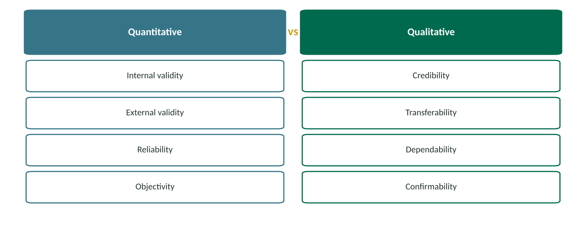</p>
<p><strong>Figure 12.</strong> <em>Quality criteria in quantitative and
qualitative research</em></p>
<div class="box box-exam"><div class="box-label">Exam Focus</div>
<p>Expect: "Explain threats to internal and external validity with
examples." "What are the conditions for inferring causality?" "Discuss
Lincoln and Guba's trustworthiness criteria." "How can validity be
ensured in mixed methods research?"</p></div>
<h1 id="unit-7-data-analysis-descriptive-and-inferential-statistics">Unit 7:
Data Analysis: Descriptive and Inferential Statistics</h1><div aria-label="Tools for Unit 7: Data Analysis: Descriptive and Inferential Statistics" class="unit-tools" role="group"><button aria-label="Listen to Unit 7: Data Analysis: Descriptive and Inferential Statistics" class="tts-btn" data-target="unit-7-data-analysis-descriptive-and-inferential-statistics" data-tts="unit" type="button"><span aria-hidden="true">▶</span> Listen to this chapter</button><button aria-label="Listen to the summary of Unit 7: Data Analysis: Descriptive and Inferential Statistics" class="tts-btn" data-target="sum-unit-7-data-analysis-descriptive-and-inferential-statistics" data-tts="summary" type="button"><span aria-hidden="true">▶</span> Listen to summary</button><button class="done-btn" data-unit="unit-7-data-analysis-descriptive-and-inferential-statistics" type="button">Mark as studied</button></div><details class="unit-summary" id="sum-unit-7-data-analysis-descriptive-and-inferential-statistics"><summary>Chapter summary</summary><div class="sum-body"><p>Data analysis is the process of inspecting, organising, summarising and modelling data to answer research questions and test hypotheses. Analyses are classified by the number of variables:</p><p><strong>This chapter covers:</strong> Concept of data analysis; Levels of measurement; Descriptive statistics; Bivariate analysis: correlation; Simple and multiple linear regression; Inferential statistics.</p><p><strong>Key terms:</strong></p><ul><li>Confidence interval: A range of values, computed from sample data, that is likely to contain the population parameter with a stated level of confidence.</li></ul><p><strong>Key points to remember:</strong></p><ul><li>r² (coefficient of determination) gives the proportion of variance shared: r = 0.92 means r² = 0.85, so 85% of the variance in Y is associated with X.</li></ul></div></details><details class="curriculum" open=""><summary><span class="cur-label">What the curriculum says</span><span class="cur-unit">Unit 7: Data Analysis: Descriptive and Inferential Statistics · 5 contact hours</span></summary><div class="cur-h">Learning outcomes</div><p class="cur-lead">At the end of this unit learners will be able to</p><ol type="a"><li>analyze quantitative data using statistical techniques</li><li>test hypothesis using appropriate test</li></ol><div class="cur-h">Content</div><ul><li>Concept of analysis with examples from practical data<ul><li>Univariate:Types, scope and computation</li><li>Bivariate: Types, scope and computation</li><li>Multivariate:Types, scope and computation</li></ul></li><li>Use of descriptive statistics: frequency distribution; measures of central tendency and variation;</li></ul><div class="cur-sub">shape of distribution- symmetric and asymmetric</div><ul><li>Bivariate data analysis: simple correlation, scatter plot-displaying correlation between two</li></ul><div class="cur-sub">variables; product moment method</div><ul><li>Simple and multiple linear regression analysis: concept and use</li><li>Regression model: concept and use</li><li>Use of inferential statistics: (a) Point estimation (hypothesis testing) and (b) interval estimation (a) Test of hypothesis: (i) Parametric tests: t-test, Z-test, F-test; (ii) Non-parametric test: ChiSquare test and others (b) Confidence interval: concept and use</li></ul></details>
<h2 id="concept-of-data-analysis">7.1 Concept of data analysis</h2>
<p><strong>Data analysis</strong> is the process of inspecting,
organising, summarising and modelling data to answer research questions
and test hypotheses. Analyses are classified by the number of
variables:</p>
<div class="table-wrap"><table>

<thead>
<tr class="header">
<th><strong>Type</strong></th>
<th><strong>Variables analysed</strong></th>
<th><strong>Purpose</strong></th>
<th><strong>Techniques</strong></th>
</tr>
</thead>
<tbody>
<tr class="odd">
<td><strong>Univariate</strong></td>
<td>One</td>
<td>Describe distribution</td>
<td>Frequency, percentage, mean, median, mode, SD, histogram</td>
</tr>
<tr class="even">
<td><strong>Bivariate</strong></td>
<td>Two</td>
<td>Relationship or difference</td>
<td>Cross-tabulation, chi-square, correlation, simple regression,
t-test, one-way ANOVA</td>
</tr>
<tr class="odd">
<td><strong>Multivariate</strong></td>
<td>Three or more</td>
<td>Joint relationships; control</td>
<td>Multiple regression, factorial ANOVA, ANCOVA, MANOVA, factor
analysis, SEM, multilevel models</td>
</tr>
</tbody>
</table></div>
<p><strong>Table 20.</strong> <em>Univariate, bivariate and multivariate
analysis</em></p>
<h2 id="levels-of-measurement">7.2 Levels of measurement</h2>
<div class="table-wrap"><table>

<thead>
<tr class="header">
<th><strong>Level</strong></th>
<th><strong>Properties</strong></th>
<th><strong>Example</strong></th>
<th><strong>Suitable statistics</strong></th>
</tr>
</thead>
<tbody>
<tr class="odd">
<td><strong>Nominal</strong></td>
<td>Categories only</td>
<td>Gender, school type</td>
<td>Mode, frequency, chi-square</td>
</tr>
<tr class="even">
<td><strong>Ordinal</strong></td>
<td>Order</td>
<td>Class rank, Likert item</td>
<td>Median, percentiles, Spearman's rho, Mann-Whitney</td>
</tr>
<tr class="odd">
<td><strong>Interval</strong></td>
<td>Equal intervals, no true zero</td>
<td>Temperature (°C), standardised scores</td>
<td>Mean, SD, Pearson r, t, ANOVA</td>
</tr>
<tr class="even">
<td><strong>Ratio</strong></td>
<td>Equal intervals and true zero</td>
<td>Age, income, time on task</td>
<td>All of the above, coefficient of variation</td>
</tr>
</tbody>
</table></div>
<p><strong>Table 21.</strong> <em>Levels of measurement (Stevens,
1946)</em></p>
<h2 id="descriptive-statistics">7.3 Descriptive statistics</h2>
<h3 id="frequency-distribution">Frequency distribution</h3>
<p>A <strong>frequency distribution</strong> organises raw scores into
classes with frequencies (f), relative frequencies (%) and cumulative
frequencies (cf).</p>
<p></p>
<p><strong>Figure 13.</strong> <em>Histogram and frequency polygon of
students' marks</em></p>
<h3 id="measures-of-central-tendency">Measures of central tendency</h3>
<div class="box box-note"><p>Mean x̄ = Σx / n</p>
<p>Median = middle value of ordered data (grouped: Md = L + [(n/2 − cf)
/ f] × i)</p>
<p>Mode = most frequent value (grouped: Mo = L + [(f₁ − f₀) / (2f₁ − f₀
− f₂)] × i)</p></div>
<div class="box box-example"><div class="box-label">Worked Example</div>
<p>Scores: 12, 15, 15, 18, 20. Mean = 80 ÷ 5 = <strong>16</strong>;
median = <strong>15</strong>; mode = <strong>15</strong>.</p></div>
<h3 id="measures-of-variation">Measures of variation</h3>
<div class="box box-note"><p>Range = Highest − Lowest</p>
<p>Quartile deviation Q = (Q₃ − Q₁) / 2</p>
<p>Sample standard deviation s = √[Σ(x − x̄)² / (n − 1)]</p>
<p>Coefficient of variation CV = (s / x̄) × 100</p></div>
<div class="box box-example"><div class="box-label">Worked Example</div>
<p>For 12, 15, 15, 18, 20 (mean 16): deviations −4, −1, −1, 2, 4;
squared 16, 1, 1, 4, 16 = 38; s² = 38 ÷ 4 = 9.5; s =
<strong>3.08</strong>.</p></div>
<h3 id="shape-of-distribution">Shape of distribution</h3>
<p></p>
<p><strong>Figure 14.</strong> <em>Symmetric and asymmetric (skewed)
distributions</em></p>
<p><strong>Skewness</strong> describes asymmetry: in a positively skewed
distribution (e.g., a very difficult test), most scores are low with a
long tail to the right; mean &gt; median &gt; mode. In a negatively
skewed distribution (an easy test), mean &lt; median &lt; mode.
<strong>Kurtosis</strong> describes peakedness: leptokurtic (peaked),
mesokurtic (normal), platykurtic (flat).</p>
<h2 id="bivariate-analysis-correlation">7.4 Bivariate analysis:
correlation</h2>
<p></p>
<p><strong>Figure 15.</strong> <em>Scatter plots showing positive,
negative and zero correlation</em></p>
<div class="box box-note"><p>Pearson's r = Σ(x − x̄)(y − ȳ) / √[Σ(x − x̄)² × Σ(y − ȳ)²]</p>
<p>Spearman's ρ = 1 − [6Σd² / n(n² − 1)]</p></div>
<div class="box box-example"><div class="box-label">Worked Example</div>
<p>X = 2, 4, 6, 8, 10 (hours of study) and Y = 3, 5, 4, 8, 10 (test
score). x̄ = 6, ȳ = 6. Σ(x − x̄)(y − ȳ) = 12 + 2 + 0 + 4 + 16 = 34; Σ(x −
x̄)² = 40; Σ(y − ȳ)² = 34. r = 34 / √(40 × 34) = 34 / 36.88 =
<strong>0.92</strong>: a very strong positive correlation.</p></div>
<div class="table-wrap"><table>

<thead>
<tr class="header">
<th><strong>r (absolute)</strong></th>
<th><strong>Interpretation</strong></th>
</tr>
</thead>
<tbody>
<tr class="odd">
<td><strong>0.00 to 0.19</strong></td>
<td>Very weak / negligible</td>
</tr>
<tr class="even">
<td><strong>0.20 to 0.39</strong></td>
<td>Weak</td>
</tr>
<tr class="odd">
<td><strong>0.40 to 0.59</strong></td>
<td>Moderate</td>
</tr>
<tr class="even">
<td><strong>0.60 to 0.79</strong></td>
<td>Strong</td>
</tr>
<tr class="odd">
<td><strong>0.80 to 1.00</strong></td>
<td>Very strong</td>
</tr>
</tbody>
</table></div>
<p><strong>Table 22.</strong> <em>Interpreting the size of r (common
guideline)</em></p>
<div class="box box-key"><div class="box-label">Key Point</div>
<p><strong>r²</strong> (coefficient of determination) gives the
proportion of variance shared: r = 0.92 means r² = 0.85, so 85% of the
variance in Y is associated with X. Correlation does not imply causation
(third variables, reverse causation).</p></div>
<h2 id="simple-and-multiple-linear-regression">7.5 Simple and multiple
linear regression</h2>
<p><strong>Regression</strong> predicts a dependent variable (Y) from
one or more independent variables (X).</p>
<div class="box box-note"><p>Simple regression: Ŷ = a + bX, where b = Σ(x − x̄)(y − ȳ) / Σ(x −
x̄)² and a = ȳ − b x̄</p>
<p>Multiple regression: Ŷ = b₀ + b₁X₁ + b₂X₂ + ... + bₖXₖ</p></div>
<div class="box box-example"><div class="box-label">Worked Example</div>
<p>Using the data above: b = 34 / 40 = <strong>0.85</strong>; a = 6 −
0.85 × 6 = <strong>0.90</strong>. Regression equation: Ŷ = 0.90 + 0.85X.
A student who studies 7 hours is predicted to score 0.90 + 5.95 =
<strong>6.85</strong>.</p></div>
<p>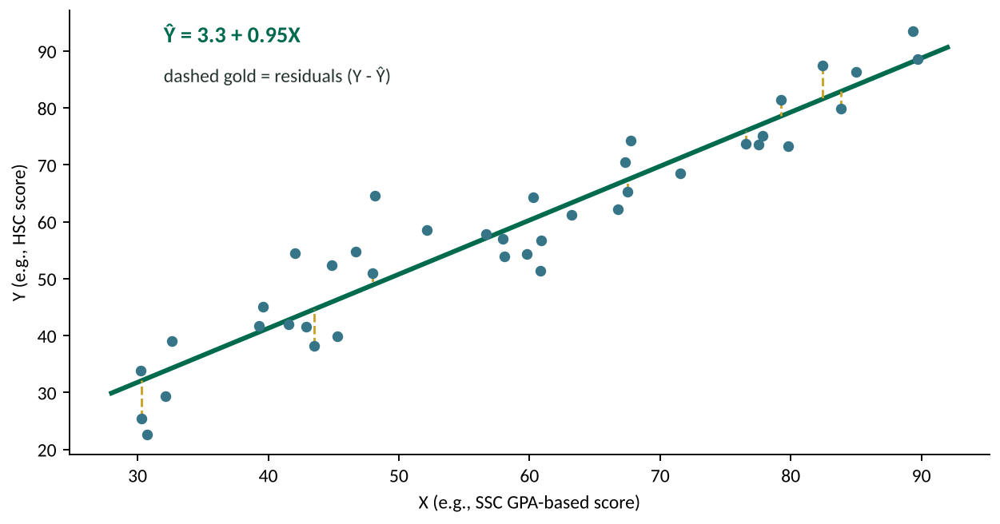</p>
<p><strong>Figure 16.</strong> <em>Regression line of best fit with
residuals</em></p>
<p><strong>Regression model</strong> concepts: the least-squares line
minimises the sum of squared residuals; <strong>R²</strong> shows
variance explained; <strong>standardised coefficients (β)</strong>
compare predictors; assumptions include linearity, independence,
homoscedasticity, normality of residuals and absence of
multicollinearity (check VIF). Logistic regression is used when Y is
dichotomous (e.g., dropout yes/no). Multilevel (hierarchical linear)
models handle students nested in schools.</p>
<h2 id="inferential-statistics">7.6 Inferential statistics</h2>
<p><strong>Inferential statistics</strong> draw conclusions about
populations from samples. The syllabus distinguishes (a) hypothesis
testing and (b) interval estimation. (Strictly, point estimation means
estimating a parameter with a single value, such as x̄ estimating μ;
hypothesis testing is a decision procedure.)</p>
<h3 id="steps-in-hypothesis-testing">Steps in hypothesis testing</h3>
<p>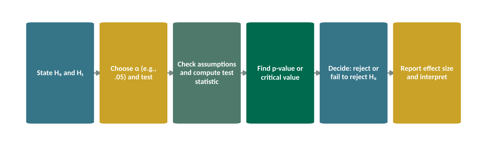</p>
<p><strong>Figure 17.</strong> <em>Steps in testing a
hypothesis</em></p>
<p>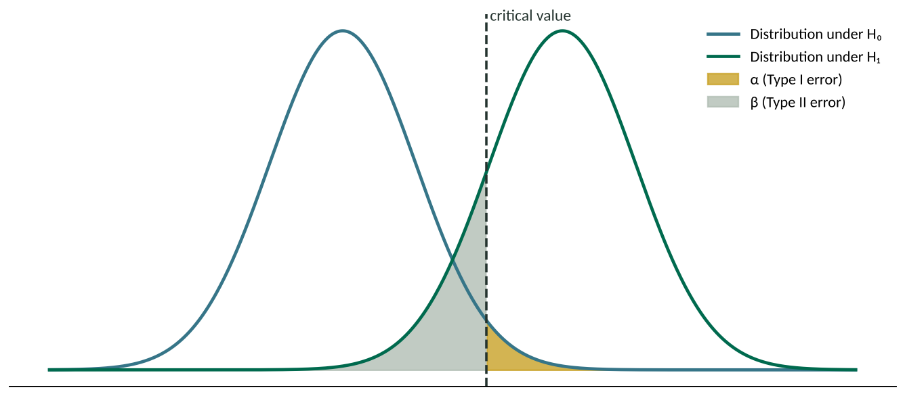</p>
<p><strong>Figure 18.</strong> <em>Type I (α) and Type II (β)
errors</em></p>
<div class="table-wrap"><table>

<thead>
<tr class="header">
<th><strong>Decision</strong></th>
<th><strong>H₀ true</strong></th>
<th><strong>H₀ false</strong></th>
</tr>
</thead>
<tbody>
<tr class="odd">
<td><strong>Reject H₀</strong></td>
<td>Type I error (α)</td>
<td>Correct decision (power = 1 − β)</td>
</tr>
<tr class="even">
<td><strong>Fail to reject H₀</strong></td>
<td>Correct decision</td>
<td>Type II error (β)</td>
</tr>
</tbody>
</table></div>
<p><strong>Table 23.</strong> <em>Decision errors in hypothesis
testing</em></p>
<h3 id="parametric-tests">Parametric tests</h3>
<div class="table-wrap"><table>

<thead>
<tr class="header">
<th><strong>Test</strong></th>
<th><strong>Use</strong></th>
<th><strong>Formula / note</strong></th>
</tr>
</thead>
<tbody>
<tr class="odd">
<td><strong>Z-test</strong></td>
<td>Compare means when σ known or n large (n &gt; 30)</td>
<td>z = (x̄ − μ) / (σ / √n)</td>
</tr>
<tr class="even">
<td><strong>One-sample t-test</strong></td>
<td>Compare a sample mean with a known value</td>
<td>t = (x̄ − μ) / (s / √n), df = n − 1</td>
</tr>
<tr class="odd">
<td><strong>Independent-samples t-test</strong></td>
<td>Compare two independent group means</td>
<td>t = (x̄₁ − x̄₂) / √(s₁²/n₁ + s₂²/n₂)</td>
</tr>
<tr class="even">
<td><strong>Paired-samples t-test</strong></td>
<td>Compare two related means (pre-post)</td>
<td>t = d̄ / (s_d / √n)</td>
</tr>
<tr class="odd">
<td><strong>F-test / ANOVA</strong></td>
<td>Compare three or more means; ratio of variances</td>
<td>F = MS between / MS within</td>
</tr>
</tbody>
</table></div>
<p><strong>Table 24.</strong> <em>Common parametric tests</em></p>
<div class="box box-example"><div class="box-label">Worked Example</div>
<p>Independent t-test: Group A (activity-based teaching) n = 30, x̄ = 72,
s = 8; Group B (lecture) n = 30, x̄ = 66, s = 10. SE = √(64/30 + 100/30)
= √5.467 = 2.34; t = 6 / 2.34 = <strong>2.57</strong>, df = 58. The
critical value at α = .05 (two-tailed) ≈ 2.00, so H₀ is rejected. Effect
size d = 6 / √[(64 + 100)/2] = 6 / 9.06 = <strong>0.66</strong> (medium
to large).</p></div>
<p><strong>Assumptions</strong> of parametric tests: interval/ratio
data, approximately normal distribution (or large n), homogeneity of
variance (Levene's test), independence of observations.</p>
<h3 id="non-parametric-tests">Non-parametric tests</h3>
<p>Used with nominal or ordinal data, small samples or violated
assumptions.</p>
<div class="table-wrap"><table>

<thead>
<tr class="header">
<th><strong>Purpose</strong></th>
<th><strong>Parametric</strong></th>
<th><strong>Non-parametric alternative</strong></th>
</tr>
</thead>
<tbody>
<tr class="odd">
<td><strong>Two independent groups</strong></td>
<td>Independent t-test</td>
<td>Mann-Whitney U / Wilcoxon rank-sum</td>
</tr>
<tr class="even">
<td><strong>Two related groups</strong></td>
<td>Paired t-test</td>
<td>Wilcoxon signed-rank test</td>
</tr>
<tr class="odd">
<td><strong>Three or more independent groups</strong></td>
<td>One-way ANOVA</td>
<td>Kruskal-Wallis H</td>
</tr>
<tr class="even">
<td><strong>Three or more related groups</strong></td>
<td>Repeated-measures ANOVA</td>
<td>Friedman test</td>
</tr>
<tr class="odd">
<td><strong>Association</strong></td>
<td>Pearson r</td>
<td>Spearman's rho; Kendall's tau</td>
</tr>
<tr class="even">
<td><strong>Categorical association</strong></td>
<td>—</td>
<td>Chi-square test</td>
</tr>
</tbody>
</table></div>
<p><strong>Table 25.</strong> <em>Parametric tests and their
non-parametric alternatives</em></p>
<div class="box box-note">Chi-square χ² = Σ [(O − E)² / E], where E = (row total × column
total) / N; df = (r − 1)(c − 1)</div>
<div class="box box-example"><div class="box-label">Worked Example</div>
<p>100 students (50 male, 50 female) are asked whether they prefer
online classes. Males: 30 Yes, 20 No; females: 20 Yes, 30 No. Each
expected frequency = (50 × 50) / 100 = 25. χ² = (30−25)²/25 +
(20−25)²/25 + (20−25)²/25 + (30−25)²/25 = 1 + 1 + 1 + 1 =
<strong>4.00</strong>; df = 1; critical value at .05 = 3.84. Since 4.00
&gt; 3.84, preference is associated with gender.</p></div>
<h3 id="confidence-intervals">Confidence intervals</h3>
<div class="box box-def"><div class="box-label">Definition</div>
<p><strong>Confidence interval:</strong> A range of values, computed
from sample data, that is likely to contain the population parameter
with a stated level of confidence. A 95% CI means that if the sampling
were repeated many times, about 95% of such intervals would contain the
true parameter.</p></div>
<div class="box box-note">95% CI for the mean = x̄ ± 1.96 (σ / √n) [use t instead of 1.96 for
small samples]</div>
<div class="box box-example"><div class="box-label">Worked Example</div>
<p>x̄ = 72, s = 8, n = 64: SE = 8 / 8 = 1; 95% CI = 72 ± 1.96 =
<strong>70.04 to 73.96</strong>.</p></div>
<div class="box box-critical"><div class="box-label">Critical Perspective</div>
<p>Statistical significance is not practical significance. The American
Statistical Association (Wasserstein &amp; Lazar, 2016) warned against
relying solely on p &lt; .05; researchers should report <strong>effect
sizes</strong> and <strong>confidence intervals</strong>, and interpret
results in context. APA (2020) requires effect sizes for primary
analyses.</p></div>
<div class="box box-exam"><div class="box-label">Exam Focus</div>
<p>Expect: "Differentiate univariate, bivariate and multivariate
analysis." "Compute Pearson's r and the regression equation from given
data." "Explain Type I and Type II errors." "When would you use a
non-parametric test? Explain the chi-square test with an example." "What
is a confidence interval?"</p></div>
<h1 id="unit-8-data-interpretation">Unit 8: Data Interpretation</h1><div aria-label="Tools for Unit 8: Data Interpretation" class="unit-tools" role="group"><button aria-label="Listen to Unit 8: Data Interpretation" class="tts-btn" data-target="unit-8-data-interpretation" data-tts="unit" type="button"><span aria-hidden="true">▶</span> Listen to this chapter</button><button aria-label="Listen to the summary of Unit 8: Data Interpretation" class="tts-btn" data-target="sum-unit-8-data-interpretation" data-tts="summary" type="button"><span aria-hidden="true">▶</span> Listen to summary</button><button class="done-btn" data-unit="unit-8-data-interpretation" type="button">Mark as studied</button></div><details class="unit-summary" id="sum-unit-8-data-interpretation"><summary>Chapter summary</summary><div class="sum-body"><p>Data interpretation is the process of assigning meaning to analysed data: explaining what the results say about the research questions, relating them to theory and previous research, and drawing implications. Analysis answers "What did we find?"; interpretation answers "What does it mean, and why does it matter?"</p><p><strong>This chapter covers:</strong> Concept and importance; Quantitative data interpretation; Qualitative data interpretation.</p><p><strong>Key points to remember:</strong></p><ul><li>Wolcott (1994) described three moves in transforming qualitative data: description (what is going on), analysis (how things work, identifying key factors and relationships) and interpretation (what it all means).</li></ul></div></details><details class="curriculum" open=""><summary><span class="cur-label">What the curriculum says</span><span class="cur-unit">Unit 8: Data Interpretation · 5 contact hours</span></summary><div class="cur-h">Learning outcomes</div><p class="cur-lead">At the end of this unit learners will be able to</p><ol type="a"><li>interpret quantitative results</li><li>interpret qualitative results</li></ol><div class="cur-h">Content</div><ul><li>Concept of data interpretation and its importance</li><li>Quantitative data interpretation with examples</li><li>Qualitative data interpretation with examples</li></ul></details>
<h2 id="concept-and-importance">8.1 Concept and importance</h2>
<p><strong>Data interpretation</strong> is the process of assigning
meaning to analysed data: explaining what the results say about the
research questions, relating them to theory and previous research, and
drawing implications. Analysis answers "What did we find?";
interpretation answers "What does it mean, and why does it matter?"</p>
<p>Importance: it connects findings to the problem; it avoids misleading
conclusions; it shows the study's contribution; it informs policy and
practice; and it reveals limitations.</p>
<p>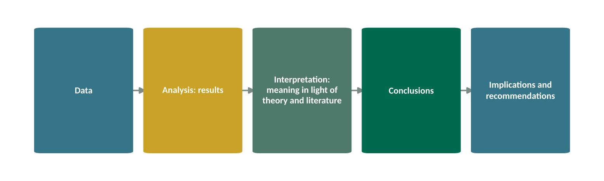</p>
<p><strong>Figure 19.</strong> <em>From data to conclusions</em></p>
<h2 id="quantitative-data-interpretation">8.2 Quantitative data
interpretation</h2>
<p>Principles:</p>
<blockquote class="mcq-options">
<p><strong>1.</strong> Return to each research question or hypothesis in
turn.</p>
<p><strong>2.</strong> Report the statistic, direction, significance and
<strong>effect size</strong> (e.g., "Students taught through
activity-based methods scored significantly higher, t(58) = 2.57, p =
.013, d = 0.66").</p>
<p><strong>3.</strong> Interpret magnitude, not only significance
(Cohen's d: 0.2 small, 0.5 medium, 0.8 large; r: .1 small, .3 medium, .5
large).</p>
<p><strong>4.</strong> Compare with previous research and theory:
consistent or contradictory? Why?</p>
<p><strong>5.</strong> Consider alternative explanations and threats to
validity.</p>
<p><strong>6.</strong> Avoid over-generalisation beyond the sample and
causal claims from correlational data.</p>
<p><strong>7.</strong> State practical implications.</p>
</blockquote>
<div class="box box-example"><div class="box-label">Worked Example</div>
<p>Finding: r = −.45 between hours of private tutoring and SSC GPA in a
sample of rural students. Weak interpretation: "Tutoring reduces
achievement." Better interpretation: "A moderate negative association
was observed; this may reflect that lower-achieving students seek more
tutoring (reverse causation) or that tutoring quality varies. Causal
conclusions cannot be drawn from this cross-sectional design."</p></div>
<h2 id="qualitative-data-interpretation">8.3 Qualitative data
interpretation</h2>
<p>Qualitative interpretation moves from <strong>codes</strong> to
<strong>categories</strong> to <strong>themes</strong> to
<strong>assertions or theory</strong>, supported by participants'
voices.</p>
<div class="table-wrap"><table>

<thead>
<tr class="header">
<th><strong>Raw data (quote)</strong></th>
<th><strong>Code</strong></th>
<th><strong>Category</strong></th>
<th><strong>Theme</strong></th>
</tr>
</thead>
<tbody>
<tr class="odd">
<td><strong>"I have 70 students; I cannot do group work every
day."</strong></td>
<td>Large class size</td>
<td>Structural constraints</td>
<td>Implementing activity-based learning under constraint</td>
</tr>
<tr class="even">
<td><strong>"The guidebook gives all creative answers; students memorise
them."</strong></td>
<td>Guidebook dependence</td>
<td>Examination culture</td>
<td>Assessment drives practice</td>
</tr>
<tr class="odd">
<td><strong>"Our head teacher asked us to try it in one class
first."</strong></td>
<td>Supportive leadership</td>
<td>Enabling conditions</td>
<td>Leadership mediates reform</td>
</tr>
</tbody>
</table></div>
<p><strong>Table 26.</strong> <em>From qualitative codes to
interpretation: an illustration</em></p>
<p>Principles: use <strong>thick description</strong>; present themes
with illustrative quotations; show diversity and negative cases; relate
to theory (e.g., Spillane's sense-making); state the researcher's
reflexive position; and discuss transferability.</p>
<div class="box box-key"><div class="box-label">Key Point</div>
<p>Wolcott (1994) described three moves in transforming qualitative
data: <strong>description</strong> (what is going on),
<strong>analysis</strong> (how things work, identifying key factors and
relationships) and <strong>interpretation</strong> (what it all means).
Strong theses balance all three.</p></div>
<div class="box box-exam"><div class="box-label">Exam Focus</div>
<p>Expect: "What is data interpretation? Distinguish it from analysis."
"Discuss guidelines for interpreting quantitative results with
examples." "How are qualitative findings interpreted? Illustrate with
codes and themes."</p></div>
<h1 id="unit-9-writing-research-report">Unit 9: Writing Research
Report</h1><div aria-label="Tools for Unit 9: Writing Research Report" class="unit-tools" role="group"><button aria-label="Listen to Unit 9: Writing Research Report" class="tts-btn" data-target="unit-9-writing-research-report" data-tts="unit" type="button"><span aria-hidden="true">▶</span> Listen to this chapter</button><button aria-label="Listen to the summary of Unit 9: Writing Research Report" class="tts-btn" data-target="sum-unit-9-writing-research-report" data-tts="summary" type="button"><span aria-hidden="true">▶</span> Listen to summary</button><button class="done-btn" data-unit="unit-9-writing-research-report" type="button">Mark as studied</button></div><details class="unit-summary" id="sum-unit-9-writing-research-report"><summary>Chapter summary</summary><div class="sum-body"><p>Research is incomplete until it is reported. Reporting: makes findings available for scrutiny and replication; contributes to the body of knowledge; informs policy and practice; fulfils obligations to participants and funders; and builds the researcher's career.</p><p><strong>This chapter covers:</strong> Importance of reporting research results; Format of a research report; Evaluating a research report.</p></div></details><details class="curriculum" open=""><summary><span class="cur-label">What the curriculum says</span><span class="cur-unit">Unit 9: Writing Research Report · 5 contact hours</span></summary><div class="cur-h">Learning outcomes</div><p class="cur-lead">At the end of this unit learners will be able to</p><ol type="a"><li>format a research report following particular style</li><li>evaluate a research report</li></ol><div class="cur-h">Content</div><ul><li>Importance of reporting research results</li><li>Format of research report: (i) Various aspects of a report, (ii) Different chapters, (iii) Pagination, (iv) Tables and figures, (v) Writing style and language, (vi) Referencing</li><li>Evaluating a research report: Purpose of evaluation; Guidelines and checklist for evaluating a research report</li></ul></details>
<h2 id="importance-of-reporting-research-results">9.1 Importance of
reporting research results</h2>
<p>Research is incomplete until it is reported. Reporting: makes
findings available for scrutiny and replication; contributes to the body
of knowledge; informs policy and practice; fulfils obligations to
participants and funders; and builds the researcher's career.</p>
<h2 id="format-of-a-research-report">9.2 Format of a research
report</h2>
<h3 id="various-aspects-preliminary-main-body-reference-matter">Various
aspects (preliminary, main body, reference matter)</h3>
<div class="table-wrap"><table>

<thead>
<tr class="header">
<th><strong>Part</strong></th>
<th><strong>Contents</strong></th>
</tr>
</thead>
<tbody>
<tr class="odd">
<td><strong>Preliminary pages</strong></td>
<td>Title page; declaration; certificate of supervisor;
acknowledgements; abstract (150 to 300 words); table of contents; list
of tables; list of figures; abbreviations</td>
</tr>
<tr class="even">
<td><strong>Chapter 1: Introduction</strong></td>
<td>Background; statement of the problem; purpose; research questions /
hypotheses; significance; scope and delimitations; operational
definitions</td>
</tr>
<tr class="odd">
<td><strong>Chapter 2: Literature review</strong></td>
<td>Theoretical/conceptual framework; review of empirical studies;
research gap</td>
</tr>
<tr class="even">
<td><strong>Chapter 3: Methodology</strong></td>
<td>Worldview; design; population and sample; instruments; validity and
reliability; data collection; analysis; ethical considerations</td>
</tr>
<tr class="odd">
<td><strong>Chapter 4: Results / findings</strong></td>
<td>Presented by research question; tables and figures; qualitative
themes</td>
</tr>
<tr class="even">
<td><strong>Chapter 5: Discussion, conclusions and
recommendations</strong></td>
<td>Interpretation linked to literature; conclusions; implications;
limitations; recommendations for practice and further research</td>
</tr>
<tr class="odd">
<td><strong>Reference matter</strong></td>
<td>References (APA 7th); appendices (instruments, consent forms,
permission letters, extra tables)</td>
</tr>
</tbody>
</table></div>
<p><strong>Table 27.</strong> <em>Components of a thesis or research
report</em></p>
<h3 id="pagination">Pagination</h3>
<p>Preliminary pages are numbered in lower-case Roman numerals (i, ii,
iii); the main text begins with Arabic numeral 1 on the first page of
Chapter 1. APA student papers place page numbers at the top right.</p>
<h3 id="tables-and-figures-apa-7th">Tables and figures (APA 7th)</h3>
<ul>
<li><p>Number tables and figures consecutively in <strong>bold</strong>
(Table 1, Figure 1).</p></li>
<li><p>Give an <em>italicised</em> title in title case on the line below
the number.</p></li>
<li><p>Tables use minimal horizontal lines and no vertical
lines.</p></li>
<li><p>Notes go below the table or figure (general, specific,
probability notes).</p></li>
<li><p>Refer to every table and figure in the text; do not repeat all
numbers in prose.</p></li>
<li><p>Report statistics in APA format: <em>M</em> = 72.00, <em>SD</em>
= 8.00; <em>t</em>(58) = 2.57, <em>p</em> = .013; <em>r</em>(48) = .45,
<em>p</em> &lt; .001.</p></li>
</ul>
<h3 id="writing-style-and-language">Writing style and language</h3>
<p>Clear, concise, objective and formal; avoid bias in language (APA 7th
guidelines on bias-free language: person-first or identity-first
language as appropriate; singular "they"); use past tense for methods
and results, present tense for discussing implications; avoid
anthropomorphism; define abbreviations at first use.</p>
<h3 id="referencing">Referencing</h3>
<p>APA 7th edition uses the <strong>author-date</strong> system.</p>
<div class="table-wrap"><table>

<thead>
<tr class="header">
<th><strong>Source</strong></th>
<th><strong>Reference list format</strong></th>
</tr>
</thead>
<tbody>
<tr class="odd">
<td><strong>Book</strong></td>
<td>Creswell, J. W., &amp; Creswell, J. D. (2018). <em>Research design:
Qualitative, quantitative, and mixed methods approaches</em> (5th ed.).
Sage.</td>
</tr>
<tr class="even">
<td><strong>Edited chapter</strong></td>
<td>Guba, E. G., &amp; Lincoln, Y. S. (1994). Competing paradigms in
qualitative research. In N. K. Denzin &amp; Y. S. Lincoln (Eds.),
<em>Handbook of qualitative research</em> (pp. 105-117). Sage.</td>
</tr>
<tr class="odd">
<td><strong>Journal article</strong></td>
<td>Kivunja, C., &amp; Kuyini, A. B. (2017). Understanding and applying
research paradigms in educational contexts. <em>International Journal of
Higher Education, 6</em>(5), 26-41.
https://doi.org/10.5430/ijhe.v6n5p26</td>
</tr>
<tr class="even">
<td><strong>Report (organisation)</strong></td>
<td>Ministry of Education. (2010). <em>National education policy
2010</em>. Government of the People's Republic of Bangladesh.</td>
</tr>
<tr class="odd">
<td><strong>Thesis</strong></td>
<td>Salahuddin, A. N. M. (2016). <em>Making a door: A case study of the
leadership and change practices of a principal in Bangladesh</em>
[Doctoral dissertation, University of Canterbury].</td>
</tr>
<tr class="even">
<td><strong>In-text</strong></td>
<td>(Creswell &amp; Creswell, 2018) or Creswell and Creswell (2018);
three or more authors: (Malak et al., 2018)</td>
</tr>
</tbody>
</table></div>
<p><strong>Table 28.</strong> <em>APA 7th referencing examples</em></p>
<h2 id="evaluating-a-research-report">9.3 Evaluating a research
report</h2>
<p><strong>Purposes of evaluation:</strong> judge credibility and
quality; decide whether to use findings; identify contributions and
weaknesses; learn research skills; peer review for publication; examine
theses.</p>
<div class="table-wrap"><table>

<thead>
<tr class="header">
<th><strong>Section</strong></th>
<th><strong>Guiding questions</strong></th>
</tr>
</thead>
<tbody>
<tr class="odd">
<td><strong>Title and abstract</strong></td>
<td>Is the title concise and informative? Does the abstract summarise
purpose, method, results and conclusions?</td>
</tr>
<tr class="even">
<td><strong>Problem and purpose</strong></td>
<td>Is the problem significant and clearly stated? Are questions or
hypotheses clear and researchable?</td>
</tr>
<tr class="odd">
<td><strong>Literature review</strong></td>
<td>Is it current, relevant, critical and synthesised? Is there a clear
gap and framework?</td>
</tr>
<tr class="even">
<td><strong>Method</strong></td>
<td>Is the design appropriate and justified? Is the sample adequate and
described? Are instruments valid and reliable? Are procedures
replicable? Were ethics addressed?</td>
</tr>
<tr class="odd">
<td><strong>Analysis</strong></td>
<td>Are analyses appropriate to questions and data? Are assumptions
checked? Are effect sizes reported?</td>
</tr>
<tr class="even">
<td><strong>Results</strong></td>
<td>Are results clearly presented and accurately reported?</td>
</tr>
<tr class="odd">
<td><strong>Discussion</strong></td>
<td>Are interpretations supported by data? Are findings related to
literature? Are limitations acknowledged?</td>
</tr>
<tr class="even">
<td><strong>Conclusions and recommendations</strong></td>
<td>Do conclusions follow from findings? Are recommendations
feasible?</td>
</tr>
<tr class="odd">
<td><strong>References and presentation</strong></td>
<td>Are references complete and consistent (APA)? Is the writing clear
and well organised?</td>
</tr>
</tbody>
</table></div>
<p><strong>Table 29.</strong> <em>Checklist for evaluating a research
report</em></p>
<div class="box box-tip"><div class="box-label">Study tip</div><p>Practise report evaluation the way a journal club does: read one published Bangladeshi article (e.g., Malak et al., 2018, in the Cambridge Journal of Education), evaluate it with the checklist, then note its strengths, weaknesses and how you would improve it.</p></div>
<div class="box box-exam"><div class="box-label">Exam Focus</div>
<p>Expect: "Describe the format of a research report." "Explain APA 7th
guidelines for tables, figures and referencing." "Prepare a checklist
for evaluating a research report and apply it to a study you
know."</p></div>
<h1 id="reading-list">Reading List</h1><div aria-label="Tools for Reading List" class="unit-tools" role="group"><button aria-label="Listen to Reading List" class="tts-btn" data-target="reading-list" data-tts="unit" type="button"><span aria-hidden="true">▶</span> Listen to this chapter</button><button class="done-btn" data-unit="reading-list" type="button">Mark as studied</button></div><h2 id="reading-list-curriculum">Recommended in the curriculum</h2><p class="rl-note">Books, journals and reports listed in the official course curriculum, as given there.</p><ol class="reading"><li>Ary, D., Jacobs, L. C., &amp; Sorensen, C. (2010). Introduction to research in education (8th ed.). California: Wadsworth.</li><li>Bell, J. (2005). Doing your research project: A guide for first time researchers in education, health and social science. England: Open University Press.</li><li>Best, J. W., &amp; Kahn, J. V. (2006), Research in Education, New Delhi: Prentice Hall.</li><li>Carr, W. L., &amp; Kemmis, S. (1986). Becoming critical: Education, knowledge and action research. London: Flamer.</li><li>Creswell, J. W. (2014). Research design: Qualitative, quantitative and mixed methods approaches. Boston: Pearson</li><li>Creswell, J. W. (2012). Educational research: Planning, conducting, and evaluating qualitative and quantitative research. Boston: Pearson.</li><li>Flick, UWE. (2009). An Introduction to Qualitative Research. London: Sage.</li><li>Fraenkel, J. R., &amp; Wallen, N.E. (2009). How to design and evaluate research in education. New York: McGraw-Hill.</li><li>Gall, M. D., Gall, J.P., &amp; Borg, W. R. (2007). Educational research: An introduction. New York Allyn and Becon.</li><li>Gay, L. R., Mills, G. E. &amp; Airasian, P. (2012). Educational research: Competencies for analysis and applications (10th ed.). Boston: Pearson.</li><li>Gay, L. R., &amp; Airasian, P. (2003). Educational Research: Competencies for Analysis and Applications. New Jersey: Merrill Prentice Hall.</li><li>Guba, E. G., &amp; Lincoln, Y. S. (1994). Competing paradigms in qualitative research. In N. K. Denzin &amp; Y. S. Lincoln (Eds.), Handbook of qualitative research (pp. 105-117). Thousand Oaks, CA: Sage.</li><li>Johnson, B., &amp; Christensen, L. (2014). Educational Research: Quantitative, Qualitative, and Mixed approaches. Los Angeles: SAGE Publications, Inc.</li><li>Kemmis, S., McTaggart, R., Retallick, J. (2004). The Action Research Planner. Pakistan: Aga Khan University</li><li>Kothary, C. R. (2005). Research Methodology, New Delhi: New Age International Publishers.</li><li>McMillan, J. H. (2012). Educational Research: Fundamentals for the Consumer (6th ed.). Boston, MA: Pearson.</li><li>Miles, M. B., &amp; Huberman, A. M. (1994). Qualitative data analysis: An expanded sourcebook. Thousand Oaks, CA: Sage Publications.</li><li>Articles</li><li>Alase, A. (2017). The interpretative phenomenological analysis (IPA): A guide to a good qualitative research approach. International Journal of Education &amp; Literacy Studies, 5(2), 112-131. Available at: http://dx.doi.org/10.7575/aiac.ijels.v.5n.2p.9.</li><li>Aliyu, A. A., Singhry, I. M., Adamu, H. &amp; Abubakar, M. M. (2015). Ontology, epistemology and axiology in quantitative and qualitative research: Elucidation of the research philosophical misconception. Mediterranean Publications &amp; Research International on New Direction and Uncommon, 2(1). Available at: https://www.researchgate.net/ publication/318721927.</li><li>Doyle, L., Brady, AM, &amp; Byrne, G. (2016). An overview of mixed methods research – revisited. Journal of Research in Nursing, 21(8), 623-635. DOI: 10.1177/1744987116674257.</li><li>Doyle, L., Brady, AM. &amp; Byrne, G. (2009). An overview of mixed methods research. International Journal of Research in Nursing, 14(2), 175-185. DOI: 10.1177/1744987108093962.</li><li>Kivunja, C. &amp; Kuyini, A. B. (2017). Understanding and applying research paradigms in educational contexts. International Journal of Higher Education, 6(5), 9-19. Available at: http://dx.doi.org/10.5539/elt.v5n9p9.</li><li>Master of Education in Pre-Primary and Primary Education (PPE)</li></ol><h2 id="reading-list-world">Widely read books worldwide on this subject</h2><p class="rl-note">Well-known international texts that go well with this course.</p><ol class="reading"><li>Cohen, L., Manion, L., &amp; Morrison, K. (2018). Research Methods in Education (8th ed.). Routledge.</li><li>Creswell, J. W., &amp; Creswell, J. D. (2018). Research Design (5th ed.). Sage.</li><li>Kerlinger, F. N., &amp; Lee, H. B. (2000). Foundations of Behavioral Research (4th ed.). Harcourt.</li><li>Punch, K. F., &amp; Oancea, A. (2014). Introduction to Research Methods in Education (2nd ed.). Sage.</li><li>Bryman, A. (2016). Social Research Methods (5th ed.). Oxford University Press.</li><li>DeVellis, R. F., &amp; Thorpe, C. T. (2021). Scale Development: Theory and Applications (5th ed.). Sage.</li></ol><h1 id="exam-preparation-bank">Exam Preparation Bank</h1><div aria-label="Tools for Exam Preparation Bank" class="unit-tools" role="group"><button aria-label="Listen to Exam Preparation Bank" class="tts-btn" data-target="exam-preparation-bank" data-tts="unit" type="button"><span aria-hidden="true">▶</span> Listen to this chapter</button><button class="done-btn" data-unit="exam-preparation-bank" type="button">Mark as studied</button></div>
<h2 id="a.-multiple-choice-questions">A. Multiple-choice questions</h2>
<p><strong>1.</strong> The branch of philosophy concerned with the
nature of reality is:</p>
<blockquote class="mcq-options">
<p><strong>(a)</strong> Epistemology <strong>(b)</strong> Ontology
<strong>(c)</strong> Axiology <strong>(d)</strong> Methodology</p>
<details class="answer"><summary>Show answer</summary><p>Answer: (b)</p></details>
</blockquote>
<p><strong>2.</strong> Axiology deals with:</p>
<blockquote class="mcq-options">
<p><strong>(a)</strong> Nature of knowledge <strong>(b)</strong> Role of
values in research <strong>(c)</strong> Methods of sampling
<strong>(d)</strong> Logic of inquiry</p>
<details class="answer"><summary>Show answer</summary><p>Answer: (b)</p></details>
</blockquote>
<p><strong>3.</strong> "The basic belief system or worldview that guides
the investigator" is a definition of paradigm by:</p>
<blockquote class="mcq-options">
<p><strong>(a)</strong> Kuhn <strong>(b)</strong> Guba and Lincoln
<strong>(c)</strong> Creswell <strong>(d)</strong> Crotty</p>
<details class="answer"><summary>Show answer</summary><p>Answer: (b)</p></details>
</blockquote>
<p><strong>4.</strong> Pragmatism is most commonly associated with:</p>
<blockquote class="mcq-options">
<p><strong>(a)</strong> Experimental research <strong>(b)</strong> Mixed
methods research <strong>(c)</strong> Ethnography <strong>(d)</strong>
Historical research</p>
<details class="answer"><summary>Show answer</summary><p>Answer: (b)</p></details>
</blockquote>
<p><strong>5.</strong> The transformative worldview is closely linked
with:</p>
<blockquote class="mcq-options">
<p><strong>(a)</strong> Social justice and empowerment
<strong>(b)</strong> Value-free science <strong>(c)</strong> Theory
testing only <strong>(d)</strong> Random sampling</p>
<details class="answer"><summary>Show answer</summary><p>Answer: (a)</p></details>
</blockquote>
<p><strong>6.</strong> A conceptual framework is best described as:</p>
<blockquote class="mcq-options">
<p><strong>(a)</strong> An established grand theory <strong>(b)</strong>
The researcher's map of key variables and their relationships
<strong>(c)</strong> The sampling frame <strong>(d)</strong> The
reference list</p>
<details class="answer"><summary>Show answer</summary><p>Answer: (b)</p></details>
</blockquote>
<p><strong>7.</strong> A variable that changes the strength of the
relationship between IV and DV is:</p>
<blockquote class="mcq-options">
<p><strong>(a)</strong> Mediating <strong>(b)</strong> Moderating
<strong>(c)</strong> Dependent <strong>(d)</strong> Extraneous</p>
<details class="answer"><summary>Show answer</summary><p>Answer: (b)</p></details>
</blockquote>
<p><strong>8.</strong> In design notation, R O X O / R O O
represents:</p>
<blockquote class="mcq-options">
<p><strong>(a)</strong> Static group comparison <strong>(b)</strong>
Pretest-posttest control group design <strong>(c)</strong> Solomon
four-group <strong>(d)</strong> Time series</p>
<details class="answer"><summary>Show answer</summary><p>Answer: (b)</p></details>
</blockquote>
<p><strong>9.</strong> Comparing achievement of students who did and did
not attend pre-primary school is:</p>
<blockquote class="mcq-options">
<p><strong>(a)</strong> True experiment <strong>(b)</strong>
Causal-comparative <strong>(c)</strong> Action research
<strong>(d)</strong> Phenomenology</p>
<details class="answer"><summary>Show answer</summary><p>Answer: (b)</p></details>
</blockquote>
<p><strong>10.</strong> Using Cochran's formula with p = 0.5, e = 0.05
and 95% confidence gives approximately:</p>
<blockquote class="mcq-options">
<p><strong>(a)</strong> 196 <strong>(b)</strong> 384
<strong>(c)</strong> 400 <strong>(d)</strong> 1,000</p>
<details class="answer"><summary>Show answer</summary><p>Answer: (b)</p></details>
</blockquote>
<p><strong>11.</strong> Yamane's formula is:</p>
<blockquote class="mcq-options">
<p><strong>(a)</strong> n = N / (1 + Ne²) <strong>(b)</strong> n = Z²pq
/ e² <strong>(c)</strong> n = (Zσ / e)² <strong>(d)</strong> n = N ×
e</p>
<details class="answer"><summary>Show answer</summary><p>Answer: (a)</p></details>
</blockquote>
<p><strong>12.</strong> Selecting every 10th student from a list after a
random start is:</p>
<blockquote class="mcq-options">
<p><strong>(a)</strong> Simple random <strong>(b)</strong> Systematic
<strong>(c)</strong> Cluster <strong>(d)</strong> Quota</p>
<details class="answer"><summary>Show answer</summary><p>Answer: (b)</p></details>
</blockquote>
<p><strong>13.</strong> Dividing the population into urban and rural
groups and sampling randomly from each is:</p>
<blockquote class="mcq-options">
<p><strong>(a)</strong> Cluster sampling <strong>(b)</strong> Stratified
sampling <strong>(c)</strong> Snowball sampling <strong>(d)</strong>
Convenience sampling</p>
<details class="answer"><summary>Show answer</summary><p>Answer: (b)</p></details>
</blockquote>
<p><strong>14.</strong> Which sampling is most suitable for reaching
hidden populations?</p>
<blockquote class="mcq-options">
<p><strong>(a)</strong> Systematic <strong>(b)</strong> Snowball
<strong>(c)</strong> Stratified <strong>(d)</strong> Cluster</p>
<details class="answer"><summary>Show answer</summary><p>Answer: (b)</p></details>
</blockquote>
<p><strong>15.</strong> In qualitative research, sampling stops
when:</p>
<blockquote class="mcq-options">
<p><strong>(a)</strong> 30 people are reached <strong>(b)</strong>
Saturation is reached <strong>(c)</strong> The budget ends
<strong>(d)</strong> p &lt; .05</p>
<details class="answer"><summary>Show answer</summary><p>Answer: (b)</p></details>
</blockquote>
<p><strong>16.</strong> "Is the training useful and enjoyable?" is an
example of:</p>
<blockquote class="mcq-options">
<p><strong>(a)</strong> Leading question <strong>(b)</strong>
Double-barrelled question <strong>(c)</strong> Open question
<strong>(d)</strong> Rank-order item</p>
<details class="answer"><summary>Show answer</summary><p>Answer: (b)</p></details>
</blockquote>
<p><strong>17.</strong> The method of equal-appearing intervals is
associated with:</p>
<blockquote class="mcq-options">
<p><strong>(a)</strong> Likert <strong>(b)</strong> Thurstone
<strong>(c)</strong> Guttman <strong>(d)</strong> Osgood</p>
<details class="answer"><summary>Show answer</summary><p>Answer: (b)</p></details>
</blockquote>
<p><strong>18.</strong> Sociometry was developed by:</p>
<blockquote class="mcq-options">
<p><strong>(a)</strong> Moreno <strong>(b)</strong> Thurstone
<strong>(c)</strong> Likert <strong>(d)</strong> Flanders</p>
<details class="answer"><summary>Show answer</summary><p>Answer: (a)</p></details>
</blockquote>
<p><strong>19.</strong> The Spearman-Brown formula is used in:</p>
<blockquote class="mcq-options">
<p><strong>(a)</strong> Test-retest reliability <strong>(b)</strong>
Split-half reliability <strong>(c)</strong> Inter-rater reliability
<strong>(d)</strong> Construct validity</p>
<details class="answer"><summary>Show answer</summary><p>Answer: (b)</p></details>
</blockquote>
<p><strong>20.</strong> Cronbach's alpha measures:</p>
<blockquote class="mcq-options">
<p><strong>(a)</strong> Stability <strong>(b)</strong> Internal
consistency <strong>(c)</strong> Predictive validity
<strong>(d)</strong> Inter-rater agreement</p>
<details class="answer"><summary>Show answer</summary><p>Answer: (b)</p></details>
</blockquote>
<p><strong>21.</strong> Factor analysis is primarily used to
establish:</p>
<blockquote class="mcq-options">
<p><strong>(a)</strong> Content validity <strong>(b)</strong> Construct
validity <strong>(c)</strong> Face validity <strong>(d)</strong>
Test-retest reliability</p>
<details class="answer"><summary>Show answer</summary><p>Answer: (b)</p></details>
</blockquote>
<p><strong>22.</strong> The tendency of extreme scorers to move towards
the mean on retesting is:</p>
<blockquote class="mcq-options">
<p><strong>(a)</strong> History <strong>(b)</strong> Maturation
<strong>(c)</strong> Statistical regression <strong>(d)</strong>
Mortality</p>
<details class="answer"><summary>Show answer</summary><p>Answer: (c)</p></details>
</blockquote>
<p><strong>23.</strong> The control group working harder to compete with
the experimental group is called:</p>
<blockquote class="mcq-options">
<p><strong>(a)</strong> Hawthorne effect <strong>(b)</strong> John Henry
effect <strong>(c)</strong> Pygmalion effect <strong>(d)</strong> Halo
effect</p>
<details class="answer"><summary>Show answer</summary><p>Answer: (b)</p></details>
</blockquote>
<p><strong>24.</strong> In Lincoln and Guba's framework, transferability
parallels:</p>
<blockquote class="mcq-options">
<p><strong>(a)</strong> Internal validity <strong>(b)</strong> External
validity <strong>(c)</strong> Reliability <strong>(d)</strong>
Objectivity</p>
<details class="answer"><summary>Show answer</summary><p>Answer: (b)</p></details>
</blockquote>
<p><strong>25.</strong> Member checking is a strategy to enhance:</p>
<blockquote class="mcq-options">
<p><strong>(a)</strong> Credibility <strong>(b)</strong> Transferability
<strong>(c)</strong> Dependability <strong>(d)</strong>
Generalisability</p>
<details class="answer"><summary>Show answer</summary><p>Answer: (a)</p></details>
</blockquote>
<p><strong>26.</strong> An audit trail mainly supports:</p>
<blockquote class="mcq-options">
<p><strong>(a)</strong> Credibility <strong>(b)</strong> Dependability
and confirmability <strong>(c)</strong> Transferability
<strong>(d)</strong> Statistical power</p>
<details class="answer"><summary>Show answer</summary><p>Answer: (b)</p></details>
</blockquote>
<p><strong>27.</strong> The level of measurement of a Likert item
response is technically:</p>
<blockquote class="mcq-options">
<p><strong>(a)</strong> Nominal <strong>(b)</strong> Ordinal
<strong>(c)</strong> Interval <strong>(d)</strong> Ratio</p>
<details class="answer"><summary>Show answer</summary><p>Answer: (b)</p></details>
</blockquote>
<p><strong>28.</strong> In a positively skewed distribution:</p>
<blockquote class="mcq-options">
<p><strong>(a)</strong> Mean &lt; median <strong>(b)</strong> Mean =
median <strong>(c)</strong> Mean &gt; median <strong>(d)</strong> Mode
&gt; mean</p>
<details class="answer"><summary>Show answer</summary><p>Answer: (c)</p></details>
</blockquote>
<p><strong>29.</strong> If r = 0.6, the coefficient of determination
is:</p>
<blockquote class="mcq-options">
<p><strong>(a)</strong> 0.06 <strong>(b)</strong> 0.36
<strong>(c)</strong> 0.60 <strong>(d)</strong> 0.77</p>
<details class="answer"><summary>Show answer</summary><p>Answer: (b)</p></details>
</blockquote>
<p><strong>30.</strong> In Ŷ = a + bX, b is the:</p>
<blockquote class="mcq-options">
<p><strong>(a)</strong> Intercept <strong>(b)</strong> Slope (regression
coefficient) <strong>(c)</strong> Residual <strong>(d)</strong>
Correlation</p>
<details class="answer"><summary>Show answer</summary><p>Answer: (b)</p></details>
</blockquote>
<p><strong>31.</strong> Rejecting a true null hypothesis is a:</p>
<blockquote class="mcq-options">
<p><strong>(a)</strong> Type I error <strong>(b)</strong> Type II error
<strong>(c)</strong> Sampling error <strong>(d)</strong> Measurement
error</p>
<details class="answer"><summary>Show answer</summary><p>Answer: (a)</p></details>
</blockquote>
<p><strong>32.</strong> Power of a test equals:</p>
<blockquote class="mcq-options">
<p><strong>(a)</strong> α <strong>(b)</strong> β <strong>(c)</strong> 1
− α <strong>(d)</strong> 1 − β</p>
<details class="answer"><summary>Show answer</summary><p>Answer: (d)</p></details>
</blockquote>
<p><strong>33.</strong> The non-parametric alternative to the
independent t-test is:</p>
<blockquote class="mcq-options">
<p><strong>(a)</strong> Wilcoxon signed-rank <strong>(b)</strong>
Mann-Whitney U <strong>(c)</strong> Kruskal-Wallis <strong>(d)</strong>
Friedman</p>
<details class="answer"><summary>Show answer</summary><p>Answer: (b)</p></details>
</blockquote>
<p><strong>34.</strong> The non-parametric alternative to one-way ANOVA
is:</p>
<blockquote class="mcq-options">
<p><strong>(a)</strong> Kruskal-Wallis <strong>(b)</strong> Chi-square
<strong>(c)</strong> Spearman's rho <strong>(d)</strong> Paired
t-test</p>
<details class="answer"><summary>Show answer</summary><p>Answer: (a)</p></details>
</blockquote>
<p><strong>35.</strong> Degrees of freedom for a 3 × 4 chi-square
contingency table are:</p>
<blockquote class="mcq-options">
<p><strong>(a)</strong> 12 <strong>(b)</strong> 7 <strong>(c)</strong> 6
<strong>(d)</strong> 5</p>
<details class="answer"><summary>Show answer</summary><p>Answer: (c)</p></details>
</blockquote>
<p><strong>36.</strong> For a 95% confidence interval for the mean with
large samples, the Z value used is:</p>
<blockquote class="mcq-options">
<p><strong>(a)</strong> 1.645 <strong>(b)</strong> 1.96
<strong>(c)</strong> 2.33 <strong>(d)</strong> 2.58</p>
<details class="answer"><summary>Show answer</summary><p>Answer: (b)</p></details>
</blockquote>
<p><strong>37.</strong> Cohen's d of 0.8 is conventionally interpreted
as:</p>
<blockquote class="mcq-options">
<p><strong>(a)</strong> Small <strong>(b)</strong> Medium
<strong>(c)</strong> Large <strong>(d)</strong> Negligible</p>
<details class="answer"><summary>Show answer</summary><p>Answer: (c)</p></details>
</blockquote>
<p><strong>38.</strong> In APA 7th, a source with three or more authors
is cited in text as:</p>
<blockquote class="mcq-options">
<p><strong>(a)</strong> All authors every time <strong>(b)</strong>
First author et al. <strong>(c)</strong> First two authors
<strong>(d)</strong> Title only</p>
<details class="answer"><summary>Show answer</summary><p>Answer: (b)</p></details>
</blockquote>
<p><strong>39.</strong> Preliminary pages of a thesis are usually
numbered with:</p>
<blockquote class="mcq-options">
<p><strong>(a)</strong> Arabic numerals <strong>(b)</strong> Lower-case
Roman numerals <strong>(c)</strong> Letters <strong>(d)</strong> No
numbers</p>
<details class="answer"><summary>Show answer</summary><p>Answer: (b)</p></details>
</blockquote>
<p><strong>40.</strong> Wolcott's three moves in qualitative data
transformation are description, analysis and:</p>
<blockquote class="mcq-options">
<p><strong>(a)</strong> coding <strong>(b)</strong> interpretation
<strong>(c)</strong> triangulation <strong>(d)</strong> verification</p>
<details class="answer"><summary>Show answer</summary><p>Answer: (b)</p></details>
</blockquote>
<h2 id="b.-short-answer-questions">B. Short-answer questions</h2>
<blockquote class="mcq-options">
<p><strong>1.</strong> Define ontology, epistemology and axiology.</p>
<p><strong>2.</strong> Distinguish post-positivism from
constructivism.</p>
<p><strong>3.</strong> What is a theoretical framework? How does it
differ from a conceptual framework?</p>
<p><strong>4.</strong> Explain mediating and moderating variables with
examples.</p>
<p><strong>5.</strong> Write the notation of the Solomon four-group
design.</p>
<p><strong>6.</strong> What makes a research problem researchable?</p>
<p><strong>7.</strong> Calculate the sample size for N = 1,500 using
Yamane's formula at e = 0.05.</p>
<p><strong>8.</strong> Distinguish stratified and cluster sampling.</p>
<p><strong>9.</strong> What is information power in qualitative
sampling?</p>
<p><strong>10.</strong> List five rules for writing questionnaire
items.</p>
<p><strong>11.</strong> Describe the steps of constructing a Thurstone
scale.</p>
<p><strong>12.</strong> What is a sociogram? What are "stars" and
"isolates"?</p>
<p><strong>13.</strong> Distinguish validity and reliability.</p>
<p><strong>14.</strong> Write the formula of Cronbach's alpha and
interpret α = .82.</p>
<p><strong>15.</strong> State three conditions for causal inference.</p>
<p><strong>16.</strong> List five threats to internal validity.</p>
<p><strong>17.</strong> State Lincoln and Guba's four trustworthiness
criteria.</p>
<p><strong>18.</strong> Distinguish Type I and Type II errors.</p>
<p><strong>19.</strong> When is the chi-square test used? State its
limitations.</p>
<p><strong>20.</strong> Write APA 7th references for a book and a
journal article.</p>
</blockquote>
<h2 id="c.-broad-essay-questions">C. Broad (essay) questions</h2>
<blockquote class="mcq-options">
<p><strong>1.</strong> Compare the major philosophical worldviews in
research and explain how a researcher's worldview shapes the selection
of design, methods and quality criteria.</p>
<p><strong>2.</strong> What are theoretical and conceptual frameworks?
Develop a conceptual framework for a study on teachers' use of ICT in
Bangladeshi secondary schools.</p>
<p><strong>3.</strong> Discuss the major research designs and explain
how you would select an appropriate design for studying the effect of a
remedial reading programme in primary schools.</p>
<p><strong>4.</strong> Explain the methods of estimating sample size.
Compute the sample size for a survey of 3,000 teachers and justify a
multistage sampling plan.</p>
<p><strong>5.</strong> Compare probability and non-probability sampling
techniques and discuss the complexities of sampling in educational
research in Bangladesh.</p>
<p><strong>6.</strong> Describe the construction of a questionnaire and
an interview protocol. Discuss their scope and limitations.</p>
<p><strong>7.</strong> Compare Likert and Thurstone scales. Construct a
10-item Likert scale to measure attitudes towards inclusive education
and explain how you would establish its reliability and validity.</p>
<p><strong>8.</strong> Discuss threats to internal and external validity
in experimental research and suggest ways to control them.</p>
<p><strong>9.</strong> How is quality ensured in qualitative and mixed
methods research? Discuss with reference to Lincoln and Guba and
Onwuegbuzie and Johnson.</p>
<p><strong>10.</strong> Explain univariate, bivariate and multivariate
analysis. Using sample data, compute and interpret Pearson's r and a
regression equation.</p>
<p><strong>11.</strong> Describe the steps of hypothesis testing.
Explain parametric and non-parametric tests with appropriate
examples.</p>
<p><strong>12.</strong> Explain the format of a research report and
develop a checklist for evaluating a research report.</p>
</blockquote>
<h1 id="references">References</h1><div aria-label="Tools for References" class="unit-tools" role="group"><button aria-label="Listen to References" class="tts-btn" data-target="references" data-tts="unit" type="button"><span aria-hidden="true">▶</span> Listen to this chapter</button><button class="done-btn" data-unit="references" type="button">Mark as studied</button></div>
<p>Ajzen, I. (1991). The theory of planned behavior. <em>Organizational
Behavior and Human Decision Processes, 50</em>(2), 179-211.</p>
<p>Aliyu, A. A., Singhry, I. M., Adamu, H., &amp; Abubakar, M. M.
(2015). Ontology, epistemology and axiology in quantitative and
qualitative research: Elucidation of the research philosophical
misconception. <em>Proceedings of the Academic Conference: Mediterranean
Publications and Research International on New Direction and Uncommon,
2</em>(1).</p>
<p>American Educational Research Association, American Psychological
Association, &amp; National Council on Measurement in Education. (2014).
<em>Standards for educational and psychological testing</em>. AERA.</p>
<p>American Psychological Association. (2020). <em>Publication manual of
the American Psychological Association</em> (7th ed.). APA.</p>
<p>Ary, D., Jacobs, L. C., Irvine, C. K. S., &amp; Walker, D. A. (2019).
<em>Introduction to research in education</em> (10th ed.). Cengage.</p>
<p>Best, J. W., &amp; Kahn, J. V. (2006). <em>Research in education</em>
(10th ed.). Pearson.</p>
<p>Campbell, D. T., &amp; Stanley, J. C. (1963). <em>Experimental and
quasi-experimental designs for research</em>. Rand McNally.</p>
<p>Cohen, J. (1988). <em>Statistical power analysis for the behavioral
sciences</em> (2nd ed.). Lawrence Erlbaum.</p>
<p>Cohen, L., Manion, L., &amp; Morrison, K. (2018). <em>Research
methods in education</em> (8th ed.). Routledge.</p>
<p>Creswell, J. W., &amp; Creswell, J. D. (2018). <em>Research design:
Qualitative, quantitative, and mixed methods approaches</em> (5th ed.).
Sage.</p>
<p>Creswell, J. W., &amp; Guetterman, T. C. (2019). <em>Educational
research: Planning, conducting, and evaluating quantitative and
qualitative research</em> (6th ed.). Pearson.</p>
<p>Creswell, J. W., &amp; Plano Clark, V. L. (2018). <em>Designing and
conducting mixed methods research</em> (3rd ed.). Sage.</p>
<p>Creswell, J. W., &amp; Poth, C. N. (2018). <em>Qualitative inquiry
and research design: Choosing among five approaches</em> (4th ed.).
Sage.</p>
<p>Crotty, M. (1998). <em>The foundations of social research: Meaning
and perspective in the research process</em>. Sage.</p>
<p>Field, A. (2018). <em>Discovering statistics using IBM SPSS
statistics</em> (5th ed.). Sage.</p>
<p>Fraenkel, J. R., Wallen, N. E., &amp; Hyun, H. H. (2019). <em>How to
design and evaluate research in education</em> (10th ed.).
McGraw-Hill.</p>
<p>Gay, L. R., Mills, G. E., &amp; Airasian, P. (2012). <em>Educational
research: Competencies for analysis and applications</em> (10th ed.).
Pearson.</p>
<p>Grant, C., &amp; Osanloo, A. (2014). Understanding, selecting, and
integrating a theoretical framework in dissertation research.
<em>Administrative Issues Journal, 4</em>(2), 12-26.</p>
<p>Guba, E. G., &amp; Lincoln, Y. S. (1994). Competing paradigms in
qualitative research. In N. K. Denzin &amp; Y. S. Lincoln (Eds.),
<em>Handbook of qualitative research</em> (pp. 105-117). Sage.</p>
<p>Johnson, B., &amp; Christensen, L. (2014). <em>Educational research:
Quantitative, qualitative, and mixed approaches</em> (5th ed.).
Sage.</p>
<p>Kerlinger, F. N. (1986). <em>Foundations of behavioral research</em>
(3rd ed.). Holt, Rinehart and Winston.</p>
<p>Kivunja, C., &amp; Kuyini, A. B. (2017). Understanding and applying
research paradigms in educational contexts. <em>International Journal of
Higher Education, 6</em>(5), 26-41.</p>
<p>Krejcie, R. V., &amp; Morgan, D. W. (1970). Determining sample size
for research activities. <em>Educational and Psychological Measurement,
30</em>(3), 607-610.</p>
<p>Krueger, R. A., &amp; Casey, M. A. (2015). <em>Focus groups: A
practical guide for applied research</em> (5th ed.). Sage.</p>
<p>Likert, R. (1932). A technique for the measurement of attitudes.
<em>Archives of Psychology, 22</em>(140), 1-55.</p>
<p>Lincoln, Y. S., &amp; Guba, E. G. (1985). <em>Naturalistic
inquiry</em>. Sage.</p>
<p>Malak, M. S., Sharma, U., &amp; Deppeler, J. M. (2018). Predictors of
primary schoolteachers' behavioural intention to teach students
demonstrating inappropriate behaviour in regular classrooms.
<em>Cambridge Journal of Education, 48</em>(4), 495-514.</p>
<p>Malterud, K., Siersma, V. D., &amp; Guassora, A. D. (2016). Sample
size in qualitative interview studies: Guided by information power.
<em>Qualitative Health Research, 26</em>(13), 1753-1760.</p>
<p>Mertens, D. M. (2010). <em>Research and evaluation in education and
psychology</em> (3rd ed.). Sage.</p>
<p>Miles, M. B., &amp; Huberman, A. M. (1994). <em>Qualitative data
analysis: An expanded sourcebook</em> (2nd ed.). Sage.</p>
<p>Moreno, J. L. (1934). <em>Who shall survive?</em> Nervous and Mental
Disease Publishing.</p>
<p>Onwuegbuzie, A. J., &amp; Johnson, R. B. (2006). The validity issue
in mixed research. <em>Research in the Schools, 13</em>(1), 48-63.</p>
<p>Shadish, W. R., Cook, T. D., &amp; Campbell, D. T. (2002).
<em>Experimental and quasi-experimental designs for generalized causal
inference</em>. Houghton Mifflin.</p>
<p>Stevens, S. S. (1946). On the theory of scales of measurement.
<em>Science, 103</em>(2684), 677-680.</p>
<p>Thurstone, L. L., &amp; Chave, E. J. (1929). <em>The measurement of
attitude</em>. University of Chicago Press.</p>
<p>Wasserstein, R. L., &amp; Lazar, N. A. (2016). The ASA statement on
p-values: Context, process, and purpose. <em>The American Statistician,
70</em>(2), 129-133.</p>
<p>Wolcott, H. F. (1994). <em>Transforming qualitative data:
Description, analysis, and interpretation</em>. Sage.</p>
<p>Yamane, T. (1967). <em>Statistics: An introductory analysis</em> (2nd
ed.). Harper &amp; Row.</p>

</div>
<nav class="pager"><a class="prev" href="ed503.html"><small>Previous</small>ED 503 Information and Communication Technology in Education</a><a class="next" href="eer580.html"><small>Next</small>EER 580 Statistics in Educational Research</a></nav>
</article>
<button class="to-top" id="toTop" aria-label="Back to top">↑</button>

</main>
</div>
<div class="tts-bar" id="ttsBar" role="region" aria-label="Read aloud player" hidden>
  <div class="tts-info"><span class="tts-label">Reading aloud</span><span class="tts-now" id="ttsNow"></span></div>
  <div class="tts-controls">
    <button type="button" id="ttsPrev" aria-label="Previous paragraph">⏮</button>
    <button type="button" id="ttsPlay" aria-label="Pause">⏸</button>
    <button type="button" id="ttsNext" aria-label="Next paragraph">⏭</button>
    <button type="button" id="ttsStop" aria-label="Stop reading">⏹</button>
    <div class="tts-speed" role="group" aria-label="Reading speed"><span class="tts-speed-label" aria-hidden="true">Speed</span><button type="button" class="spd" data-rate="0.7" aria-pressed="false">Slow</button><button type="button" class="spd" data-rate="1" aria-pressed="true">Medium</button><button type="button" class="spd" data-rate="1.4" aria-pressed="false">Fast</button></div>
    <label class="tts-voice">Voice <select id="ttsVoice" aria-label="Reading voice"></select></label>
  </div>
</div>
<div class="sr-only" id="ttsLive" aria-live="polite" aria-atomic="true"></div>
<script src="assets/app.js"></script>
</body>
</html>
